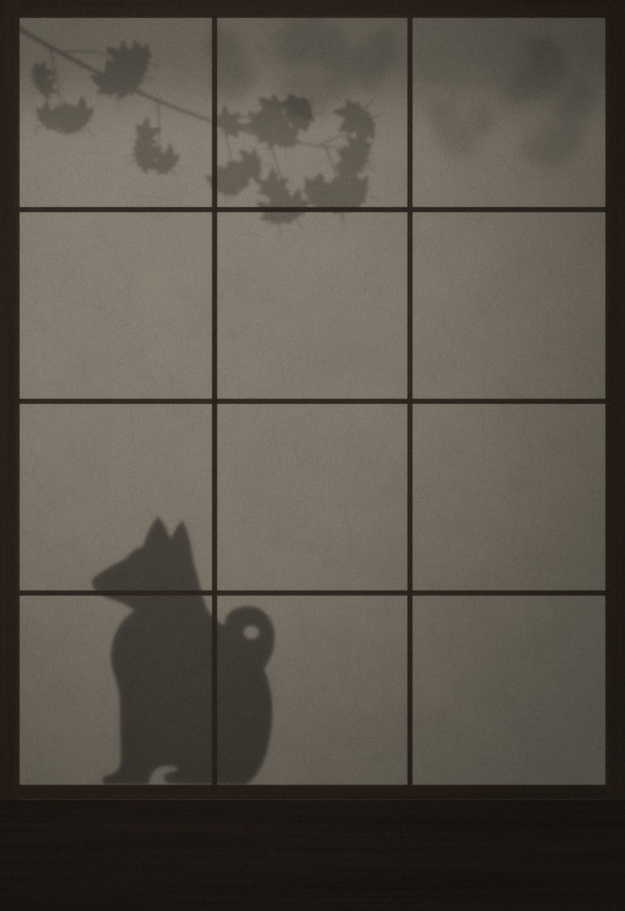
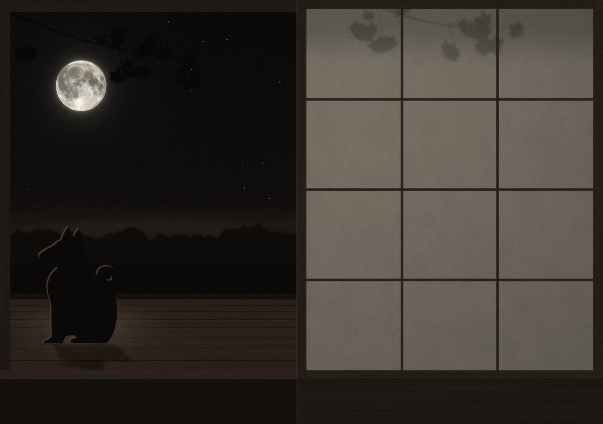
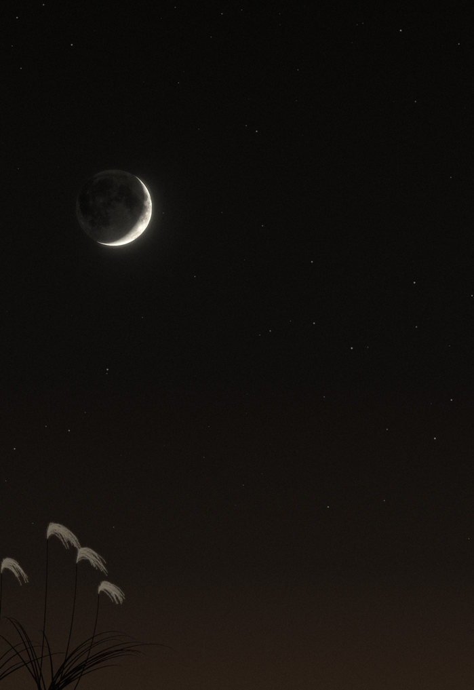
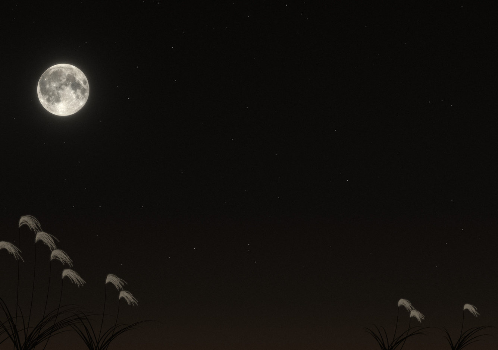
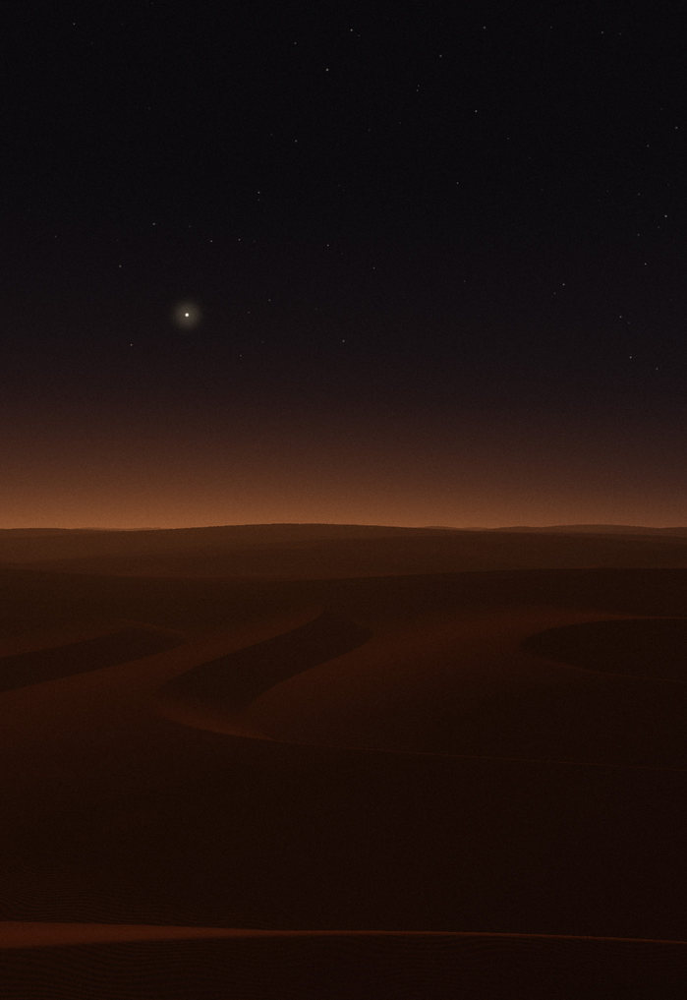
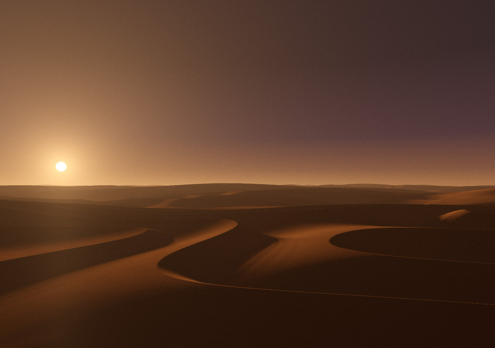
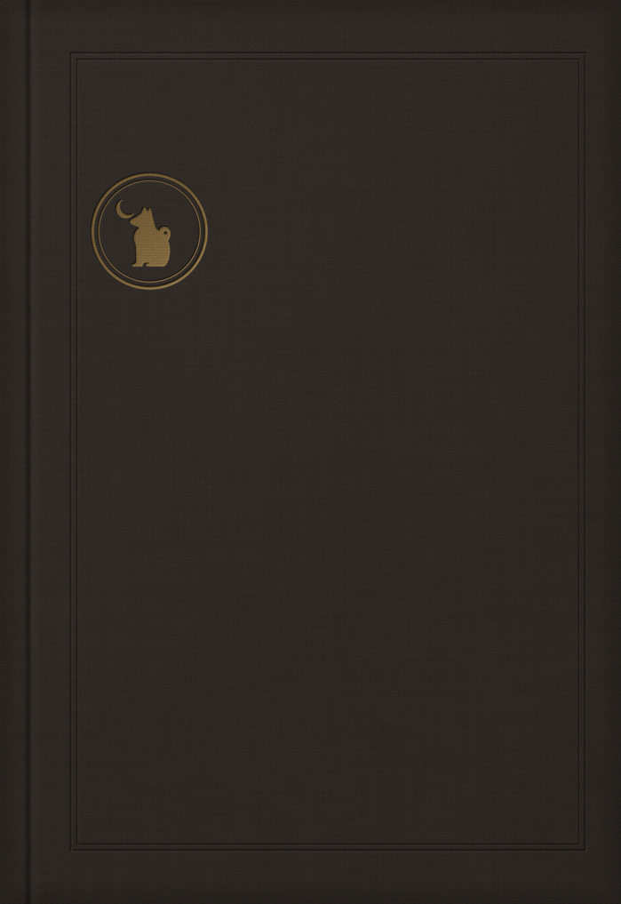
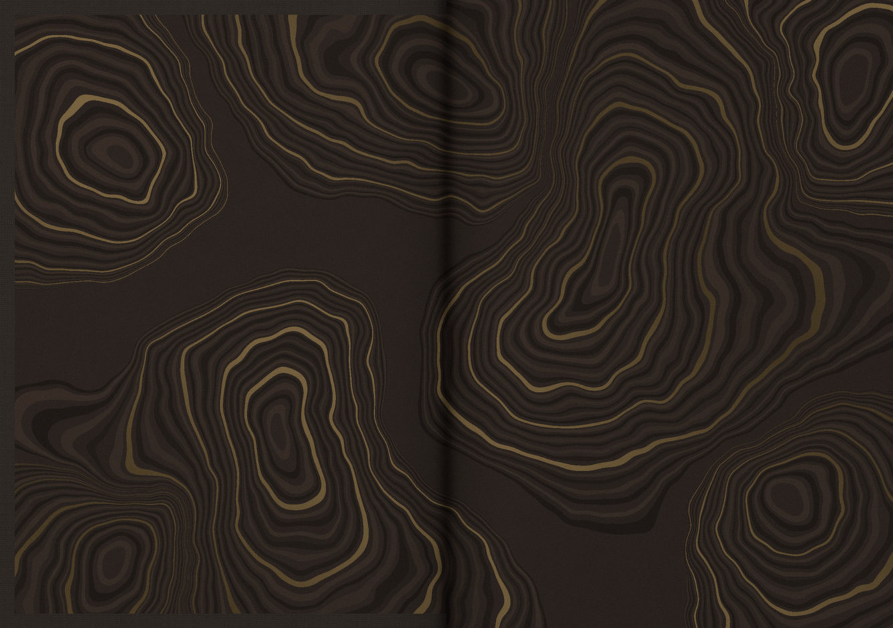

<title>iPhone Duo ホーム画面帖</title>
<meta name="claude:viewport-fit-sides" content="cover">
<link rel="preconnect" href="https://fonts.googleapis.com">
<link rel="preconnect" href="https://fonts.gstatic.com" crossorigin>
<link rel="stylesheet" href="https://fonts.googleapis.com/css2?family=IBM+Plex+Mono:wght@400;500&family=Zen+Kaku+Gothic+New:wght@400;500;700&family=Zen+Maru+Gothic:wght@500;700&family=Zen+Old+Mincho:wght@500;700;900&display=swap">
<style>
/* Layout: a proposal book. Thesis + fold diagram, a spec sheet of research facts, five concepts shown as live device mockups (closed cover + open spread), rules, then questions to answer together. */
:root{
  --bg:#ECEEF1;
  --surface:#F8F9FA;
  --stage:#DEE2E7;
  --ink:#14161B;
  --muted:#565D69;
  --line:#D2D7DE;
  --accent:#33467E;
  --sand:#87592A;
  --warn:#8A4F12;
  --f-display:"Zen Old Mincho","Hiragino Mincho ProN","Yu Mincho",serif;
  --f-body:"Zen Kaku Gothic New","Hiragino Sans","Yu Gothic",system-ui,sans-serif;
  --f-mono:"IBM Plex Mono",ui-monospace,"SFMono-Regular",Menlo,monospace;
  --f-sys:-apple-system,"SF Pro Text","Hiragino Sans","Zen Kaku Gothic New",system-ui,sans-serif;
}
@media (prefers-color-scheme: dark){
  :root:not([data-theme="light"]){
    --bg:#0E1015; --surface:#161920; --stage:#1B1F27; --ink:#E8EAEE; --muted:#9CA3AF;
    --line:#2A2F39; --accent:#A9B9F2; --sand:#DDB27E; --warn:#E7A863; color-scheme:dark;
  }
}
:root[data-theme="dark"]{
  --bg:#0E1015; --surface:#161920; --stage:#1B1F27; --ink:#E8EAEE; --muted:#9CA3AF;
  --line:#2A2F39; --accent:#A9B9F2; --sand:#DDB27E; --warn:#E7A863; color-scheme:dark;
}
*{box-sizing:border-box}
body{background:var(--bg);color:var(--ink);font-family:var(--f-body);font-size:16px;line-height:1.8;-webkit-font-smoothing:antialiased;text-rendering:optimizeLegibility}
a{color:var(--accent);text-underline-offset:.2em}
a:focus-visible,button:focus-visible,textarea:focus-visible{outline:2px solid var(--accent);outline-offset:3px;border-radius:6px}
h1,h2,h3,h4{font-family:var(--f-display);font-weight:700;line-height:1.35;text-wrap:balance;word-break:auto-phrase;margin:0}
p{margin:0}
.wrap{max-width:1140px;margin:0 auto;padding-left:max(16px,env(safe-area-inset-left,0px));padding-right:max(16px,env(safe-area-inset-right,0px));padding-block:32px 72px}
.eyebrow{font-family:var(--f-mono);font-size:.75rem;letter-spacing:.14em;text-transform:uppercase;color:var(--muted)}
.num{font-family:var(--f-mono);font-variant-numeric:tabular-nums}

/* Hero */
.hero{display:grid;grid-template-columns:minmax(0,1fr) minmax(0,1.05fr);gap:clamp(24px,4vw,56px);align-items:center;padding-block:16px 40px}
.hero h1{font-size:clamp(2.6rem,1.4rem + 4.6vw,4.8rem);font-weight:900;letter-spacing:.04em;line-height:1.15;margin-block:14px 22px}
.hero h1 small{display:block;font-size:.38em;font-weight:700;letter-spacing:.06em;margin-top:.6em;color:var(--muted)}
.lead{font-size:1.0625rem;max-width:32em}
.lead + .lead{margin-top:12px}
.diagram svg{width:100%;height:auto;display:block}
.d-dev{fill:var(--surface);stroke:var(--ink);stroke-width:1.5}
.d-scr{fill:color-mix(in srgb,var(--accent) 12%,var(--surface))}
.d-dock{fill:var(--accent);opacity:.55}
.d-fold{stroke:var(--sand);stroke-width:1.6;stroke-dasharray:5 5}
.d-line{stroke:var(--ink);fill:none;stroke-width:1.4}
.d-ink{fill:var(--ink)}
.d-txt{fill:var(--ink);font-family:var(--f-body);font-size:14px;font-weight:500}
.d-mono{fill:var(--muted);font-family:var(--f-mono);font-size:11.5px}
.d-page{fill:var(--accent);font-family:var(--f-display);font-size:30px;font-weight:700}
.d-sub{fill:var(--muted);font-family:var(--f-body);font-size:12px}
.d-note{fill:var(--sand);font-family:var(--f-body);font-size:13px;font-weight:700}
.index{display:flex;flex-wrap:wrap;gap:10px;margin:28px 0 0;padding:0;list-style:none}
.index a{display:flex;align-items:center;gap:10px;padding:6px 16px 6px 6px;border:1px solid var(--line);border-radius:999px;background:var(--surface);color:var(--ink);text-decoration:none;font-size:.9375rem;min-height:44px}
.index a:hover{border-color:var(--accent)}
.index .sw{width:30px;height:30px;border-radius:50%;flex:none;box-shadow:inset 0 0 0 1px rgba(0,0,0,.08)}
.index b{font-family:var(--f-display);color:var(--accent)}

/* Sections */
.block{padding-block:56px;border-top:1px solid var(--line)}
.sec-head{display:grid;gap:10px;margin-bottom:28px;max-width:46em}
.sec-head h2{font-size:clamp(1.7rem,1.2rem + 1.8vw,2.4rem)}
.sec-head p{color:var(--muted)}

/* Facts */
.facts{display:grid;grid-template-columns:repeat(auto-fill,minmax(min(100%,300px),1fr));gap:1px;background:var(--line);border:1px solid var(--line);border-radius:16px;overflow:hidden}
.fact{background:var(--surface);padding:20px 22px 18px;display:flex;flex-direction:column;gap:8px;min-width:0}
.fact h3{font-size:1.125rem}
.fact p{font-size:.9375rem;line-height:1.75}
.fact .src{font-size:.8125rem;color:var(--muted);margin-top:auto;padding-top:6px}
.pill{align-self:flex-start;font-family:var(--f-mono);font-size:.6875rem;letter-spacing:.08em;line-height:1;padding:5px 9px;border-radius:999px;border:1px solid currentColor}
.pill.official{color:var(--accent)}
.pill.press{color:var(--muted)}
.pill.review{color:var(--sand)}
.pill.guess{color:var(--warn);border-style:dashed}

/* Concepts */
.concept{padding-block:52px 8px;scroll-margin-top:12px}
.concept + .concept{border-top:1px dashed var(--line);margin-top:44px}
.c-head{display:grid;grid-template-columns:auto minmax(0,1fr);column-gap:22px;row-gap:6px;align-items:start;margin-bottom:18px}
.c-key{font-family:var(--f-display);font-weight:900;font-size:clamp(3.2rem,2.2rem + 4vw,5.2rem);line-height:.9;color:var(--accent);grid-row:span 2}
.c-title{display:flex;flex-wrap:wrap;align-items:baseline;gap:2px 14px}
.c-title h3{font-size:clamp(1.7rem,1.2rem + 1.6vw,2.3rem)}
.c-title .en{font-family:var(--f-mono);font-size:.8125rem;letter-spacing:.12em;text-transform:uppercase;color:var(--muted)}
.tagline{max-width:40em}
.c-controls{display:flex;flex-wrap:wrap;gap:12px 20px;align-items:center;margin:0 0 16px}
.seg{display:inline-flex;border:1px solid var(--line);border-radius:999px;padding:3px;background:var(--surface)}
.seg button{font:inherit;font-size:.875rem;border:0;background:transparent;color:var(--muted);padding:6px 16px;border-radius:999px;cursor:pointer;min-height:38px}
.seg button[aria-pressed="true"]{background:var(--ink);color:var(--bg)}
.ctl-label{font-size:.8125rem;color:var(--muted)}
.swatches{display:flex;flex-wrap:wrap;gap:6px;align-items:center}
.swatches button{font:inherit;font-size:.8125rem;display:inline-flex;align-items:center;gap:6px;border:1px solid var(--line);background:var(--surface);color:var(--ink);border-radius:999px;padding:4px 12px 4px 5px;min-height:38px;cursor:pointer}
.swatches button::before{content:"";width:22px;height:22px;border-radius:50%;background:var(--sw)}
.swatches button[aria-pressed="true"]{border-color:var(--ink);box-shadow:inset 0 0 0 1px var(--ink)}
.stage{background:var(--stage);border-radius:22px;padding:clamp(16px,3.4vw,44px);display:grid;grid-template-columns:minmax(0,1fr) minmax(0,2.07fr);gap:clamp(14px,3vw,40px);align-items:end}
.stage figure{margin:0;display:flex;flex-direction:column;gap:12px;min-width:0}
.stage figcaption{font-size:.8125rem;color:var(--muted);display:flex;justify-content:space-between;gap:4px 10px;flex-wrap:wrap}
.stage figcaption b{color:var(--ink);font-weight:500}
@media (max-width:680px){
  .stage{grid-template-columns:1fr}
  .stage .f-cover{width:58%;margin-inline:auto}
}
.recipe{display:grid;grid-template-columns:repeat(auto-fill,minmax(min(100%,300px),1fr));gap:18px 32px;margin:26px 0 0}
.recipe div{min-width:0}
.recipe dt{font-family:var(--f-mono);font-size:.75rem;letter-spacing:.08em;color:var(--muted)}
.recipe dd{margin:3px 0 0;font-size:.9375rem;line-height:1.75}
.tip{margin-top:22px;padding:16px 20px;border-radius:14px;background:var(--surface);border:1px solid var(--line);font-size:.9375rem;display:grid;grid-template-columns:auto minmax(0,1fr);gap:4px 14px}
.tip b{font-family:var(--f-display);color:var(--accent);white-space:nowrap}

/* Rules */
.rules{display:grid;grid-template-columns:repeat(auto-fill,minmax(min(100%,420px),1fr));gap:14px}
.rule{background:var(--surface);border:1px solid var(--line);border-radius:16px;padding:20px 22px;display:grid;gap:8px;min-width:0}
.rule h3{font-size:1.125rem}
.rule p{font-size:.9375rem;line-height:1.75}
.rule .tag{font-family:var(--f-mono);font-size:.6875rem;letter-spacing:.08em;color:var(--warn)}

/* Together */
.together{display:grid;grid-template-columns:minmax(0,1fr) minmax(0,1fr);gap:clamp(20px,4vw,48px);align-items:start}
@media (max-width:820px){.together{grid-template-columns:1fr}}
.questions{margin:0;padding:0;list-style:none;counter-reset:q;display:grid;gap:14px}
.questions li{counter-increment:q;display:grid;grid-template-columns:2.2em minmax(0,1fr);gap:2px 10px}
.questions li::before{content:counter(q);grid-row:span 2;font-family:var(--f-display);font-weight:900;font-size:1.5rem;line-height:1.2;color:var(--accent)}
.questions b{font-weight:700}
.questions span{color:var(--muted);font-size:.9375rem}
.answer{background:var(--surface);border:1px solid var(--line);border-radius:16px;padding:20px;display:grid;gap:12px;min-width:0}
.answer label{font-weight:700}
.answer .hint{font-size:.875rem;color:var(--muted)}
.answer textarea{width:100%;min-height:15em;resize:vertical;font:inherit;font-size:.9375rem;line-height:1.8;color:var(--ink);background:var(--bg);border:1px solid var(--line);border-radius:10px;padding:12px 14px}
.actions{display:flex;flex-wrap:wrap;gap:10px;align-items:center}
.btn{font:inherit;font-size:.9375rem;font-weight:700;border:0;border-radius:999px;padding:10px 20px;min-height:44px;background:var(--ink);color:var(--bg);cursor:pointer}
.btn.ghost{background:transparent;color:var(--ink);border:1px solid var(--line);font-weight:500}
#copy-status{font-size:.875rem;color:var(--muted)}
.deliver{margin-top:22px;font-size:.9375rem}
.deliver ul{margin:8px 0 0;padding-left:1.2em}

/* Sources */
.sources{display:grid;grid-template-columns:repeat(auto-fill,minmax(min(100%,320px),1fr));gap:22px 36px}
.sources h3{font-family:var(--f-body);font-size:.8125rem;letter-spacing:.06em;color:var(--muted);font-weight:700;margin-bottom:6px}
.sources ul{margin:0;padding:0;list-style:none;display:grid;gap:6px;font-size:.875rem;line-height:1.6}
.foot{margin-top:40px;font-size:.8125rem;color:var(--muted);max-width:52em}

/* ============ Device mockups ============ */
.device{position:relative;padding:5px;background:var(--frame);box-shadow:inset 0 0 0 1px rgba(255,255,255,.4),0 26px 40px -22px rgba(8,12,24,.55),0 2px 6px rgba(8,12,24,.16)}
.f-cover .device{border-radius:9% / 6.2%}
.f-spread .device{border-radius:4.4% / 6.2%}
.device.star{--frame:linear-gradient(140deg,#F7F6F2 0%,#D3D0C9 34%,#FBFAF7 55%,#BFBBB3 100%)}
.device.night{--frame:linear-gradient(140deg,#4D505A 0%,#202228 38%,#5A5E6A 58%,#18191D 100%)}
.screen{position:relative;overflow:hidden;border-radius:inherit;background:#000;border:3px solid #07080A;isolation:isolate;aspect-ratio:1398/2034}
.f-spread .screen{aspect-ratio:2670/1878}
.wall{position:absolute;inset:0}
.wall svg{display:block;width:100%;height:100%}
.wall img{display:block;width:100%;height:100%;object-fit:cover}
.wdg.photo img{position:absolute;inset:0;width:100%;height:100%;object-fit:cover}
.crease{position:absolute;top:0;bottom:0;left:50%;width:1.8%;transform:translateX(-50%);background:linear-gradient(90deg,transparent,rgba(0,0,0,.10) 38%,rgba(255,255,255,.10) 58%,transparent);pointer-events:none;z-index:6}
.page{position:absolute;top:0;bottom:0;left:0;width:100%;container-type:size;font-family:var(--m-font,var(--f-sys))}
.f-spread .page.p1{width:50%}
.f-spread .page.p2{left:50%;width:50%}
.grid{position:absolute;left:5cqw;right:20cqw;top:15cqw;bottom:7cqw;display:grid;grid-template-columns:repeat(4,minmax(0,1fr));grid-template-rows:repeat(6,minmax(0,1fr));column-gap:3cqw;row-gap:2.4cqw}
.app{display:flex;flex-direction:column;align-items:center;gap:1cqw;min-width:0}
.tile{width:13cqw;aspect-ratio:1;border-radius:3.4cqw;display:grid;place-items:center;position:relative;overflow:hidden;flex:none}
.tile svg{width:58%;height:58%;position:relative}
.lbl{font-size:2.7cqw;line-height:1.15;max-width:100%;white-space:nowrap;overflow:hidden;text-overflow:ellipsis;color:var(--label);text-shadow:var(--label-shadow,none);letter-spacing:.01em}
.dock{position:absolute;right:2.4cqw;top:50%;transform:translateY(-50%);width:15.5cqw;padding:2.6cqw 0;border-radius:7.75cqw;display:flex;flex-direction:column;align-items:center;gap:2.8cqw;background:var(--dock-bg);box-shadow:inset 0 0 0 .22cqw var(--dock-line);backdrop-filter:blur(12px) saturate(1.4);-webkit-backdrop-filter:blur(12px) saturate(1.4);z-index:2}
.dock .tile{width:11.5cqw;border-radius:3cqw}
.dock .lbl{display:none}
.status{position:absolute;top:2.6cqw;right:2.6cqw;width:11cqw;aspect-ratio:1;border-radius:50%;display:grid;place-items:center;font:600 2.9cqw/1 var(--f-sys);color:var(--label);font-variant-numeric:tabular-nums;z-index:2}
.status::before{content:"";position:absolute;inset:0;border-radius:50%;background:conic-gradient(from 210deg,var(--label) 0 66%,color-mix(in srgb,var(--label) 22%,transparent) 66% 100%);-webkit-mask:radial-gradient(farthest-side,transparent calc(100% - .75cqw),#000 calc(100% - .6cqw));mask:radial-gradient(farthest-side,transparent calc(100% - .75cqw),#000 calc(100% - .6cqw))}
.dots{position:absolute;bottom:2.4cqw;left:5cqw;right:20cqw;display:flex;justify-content:center;gap:1.4cqw}
.dots i{width:1.5cqw;aspect-ratio:1;border-radius:50%;background:var(--label);opacity:.35}
.dots i.on{opacity:.95}

/* Icon appearances */
.duo[data-mode="light"]{--glass-hi:rgba(255,255,255,.55);--glass-lo:rgba(255,255,255,.14);--glass-edge:rgba(255,255,255,.7);--glass-glyph:#fff;--glass-shadow:rgba(70,45,20,.5);
  --t-bg:color-mix(in srgb,var(--tint,#555) 12%,#FBFAF7);--t-fg:color-mix(in srgb,var(--tint,#555) 82%,#000);--t-edge:color-mix(in srgb,var(--tint,#555) 22%,transparent)}
.duo[data-mode="dark"]{--glass-hi:rgba(255,255,255,.2);--glass-lo:rgba(255,255,255,.04);--glass-edge:rgba(255,255,255,.3);--glass-glyph:rgba(255,255,255,.93);--glass-shadow:rgba(0,0,0,.55);
  --t-bg:color-mix(in srgb,var(--tint,#999) 18%,#111113);--t-fg:color-mix(in srgb,var(--tint,#999) 72%,#fff);--t-edge:rgba(255,255,255,.07)}
.duo[data-icons="clear"] .tile{background:linear-gradient(150deg,var(--glass-hi),var(--glass-lo));box-shadow:inset 0 0 0 .22cqw var(--glass-edge),inset 0 .7cqw 1.2cqw rgba(255,255,255,.22),0 .8cqw 2cqw rgba(0,0,0,.12);backdrop-filter:blur(6px) saturate(1.5);-webkit-backdrop-filter:blur(6px) saturate(1.5);color:var(--glass-glyph)}
.duo[data-icons="clear"] .tile svg{filter:drop-shadow(0 .3cqw .5cqw var(--glass-shadow))}
.duo[data-icons="tinted"] .tile{background:var(--t-bg);color:var(--t-fg);box-shadow:inset 0 0 0 .22cqw var(--t-edge),0 .6cqw 1.4cqw rgba(0,0,0,.08)}
.duo[data-icons="dark"] .tile{background:linear-gradient(160deg,#2D2D33,#141416);color:var(--app);box-shadow:inset 0 0 0 .22cqw rgba(255,255,255,.07),0 .8cqw 2cqw rgba(0,0,0,.3)}
.duo[data-icons="custom"] .tile{background:var(--cu);color:var(--cu-fg);border-radius:4.2cqw;box-shadow:0 .6cqw 1.6cqw rgba(90,60,50,.12)}
.duo[data-icons="custom"] .tile svg{stroke-width:1.35}
.duo[data-icons="custom"] .tile.k0{--cu:var(--cu0)}
.duo[data-icons="custom"] .tile.k1{--cu:var(--cu1)}
.duo[data-icons="custom"] .tile.k2{--cu:var(--cu2)}

/* Widgets */
.wdg{position:relative;border-radius:5.2cqw;padding:3.6cqw;background:var(--w-bg);color:var(--w-fg);box-shadow:inset 0 0 0 .22cqw var(--w-line);backdrop-filter:var(--w-blur,none);-webkit-backdrop-filter:var(--w-blur,none);overflow:hidden;min-width:0;min-height:0;display:flex;flex-direction:column;gap:1.8cqw;line-height:1.25;font-size:3cqw}
.wdg b{font-weight:600}
.w-cap{font-size:2.5cqw;color:var(--w-muted);white-space:nowrap;overflow:hidden;text-overflow:ellipsis}
.w-acc{color:var(--w-accent)}
.w-b{font-weight:600}
.w-big{font-size:10cqw;font-weight:300;line-height:1;letter-spacing:-.02em}
.w-huge{font-size:13cqw;font-weight:500;line-height:.95}
.row{display:flex;align-items:center;gap:2cqw;min-width:0}
.between{justify-content:space-between;align-items:flex-start}
.w-right{text-align:right;display:flex;flex-direction:column;align-items:flex-end;gap:.6cqw}
.w-ico{width:4.4cqw;height:4.4cqw;display:inline-block;flex:none}
.w-ico.lg{width:6cqw;height:6cqw}
.w-ico svg{width:100%;height:100%;display:block}
.hours{display:flex;justify-content:space-between;margin-top:auto}
.hours > div{display:flex;flex-direction:column;align-items:center;gap:.8cqw;font-size:2.6cqw}
.days{display:flex;flex-direction:column;gap:1.7cqw;border-top:.22cqw solid color-mix(in srgb,var(--w-fg) 18%,transparent);padding-top:2.2cqw}
.day{display:grid;grid-template-columns:7cqw 4.4cqw 5.4cqw minmax(0,1fr) 5.4cqw;align-items:center;gap:1.6cqw;font-size:2.8cqw}
.bar{position:relative;height:1cqw;border-radius:1cqw;background:color-mix(in srgb,var(--w-fg) 16%,transparent)}
.bar i{position:absolute;top:0;bottom:0;border-radius:inherit;background:linear-gradient(90deg,#82C9FF,#FFC46B)}
.evs{display:flex;flex-direction:column;gap:2cqw}
.ev{display:grid;grid-template-columns:.8cqw minmax(0,1fr);gap:2cqw;min-width:0}
.ev i{border-radius:1cqw;background:var(--ev)}
.ev b{display:block;font-size:3cqw;white-space:nowrap;overflow:hidden;text-overflow:ellipsis}
.ev span{display:block;font-size:2.5cqw;color:var(--w-muted)}
.w-mini{font-size:2.8cqw;white-space:nowrap;overflow:hidden;text-overflow:ellipsis}
.covers{display:grid;grid-template-columns:repeat(3,minmax(0,1fr));gap:2.4cqw;min-height:0}
.cv{display:flex;flex-direction:column;gap:1cqw;min-width:0}
.cv .art{aspect-ratio:1;border-radius:2.4cqw;display:block}
.cv span:last-child{font-size:2.4cqw;white-space:nowrap;overflow:hidden;text-overflow:ellipsis}
.art.a1{background:linear-gradient(135deg,#1F2A6B,#E05B7A)}
.art.a2{background:radial-gradient(circle at 32% 30%,#FFD27A,#E3734B 55%,#5A2142)}
.art.a3{background:repeating-linear-gradient(45deg,#2E3B4E 0 7%,#435673 7% 14%)}
.thumb{display:block;border-radius:2.6cqw;aspect-ratio:16/9}
.thumb.t1{background:linear-gradient(180deg,#2E3C6E 0%,#7D6E9A 55%,#E0A07E 100%)}
.thumb.t2{background:linear-gradient(180deg,#A8BEDB 0%,#E9EEF5 58%,#5E6C82 59%,#3E4A5E 100%)}
.tv-main{display:flex;flex-direction:column;gap:1.4cqw}
.tv-main b,.tv-sub b{display:block;font-size:3cqw;white-space:nowrap;overflow:hidden;text-overflow:ellipsis}
.tv-sub{display:grid;grid-template-columns:24cqw minmax(0,1fr);gap:2.4cqw;align-items:center;margin-top:auto}
.tv-sub > div{display:flex;flex-direction:column;gap:.8cqw;min-width:0}
.prog{display:block;height:.9cqw;border-radius:1cqw;background:color-mix(in srgb,var(--w-fg) 18%,transparent);overflow:hidden}
.prog i{display:block;height:100%;background:var(--w-accent)}
.scs{display:grid;grid-template-columns:repeat(2,minmax(0,1fr));grid-template-rows:repeat(2,minmax(0,1fr));gap:2cqw;flex:1;min-height:0}
.sc{border-radius:3cqw;padding:1.8cqw 2.2cqw;background:var(--sc);color:#fff;display:flex;flex-direction:column;justify-content:space-between;font-size:2.6cqw;font-weight:600;min-width:0}
.sc .w-ico{width:4.6cqw;height:4.6cqw}
.n-title{font-size:4.2cqw;font-weight:700;letter-spacing:.02em}
.n-body{flex:1;display:flex;flex-direction:column;background:repeating-linear-gradient(180deg,transparent 0 calc(6.2cqw - .2cqw),color-mix(in srgb,var(--w-fg) 14%,transparent) calc(6.2cqw - .2cqw) 6.2cqw);font-size:3.1cqw}
.n-body p{height:6.2cqw;line-height:6.2cqw;white-space:nowrap;overflow:hidden;text-overflow:ellipsis}
.n-body .n-sub{color:var(--w-accent);font-weight:600;font-size:2.7cqw}
.wdg.photo{padding:0}
.wdg.photo svg{position:absolute;inset:0;width:100%;height:100%;display:block}
.wdg.photo .chip{position:absolute;left:3.4cqw;bottom:3cqw;font-size:2.6cqw;font-weight:600;color:#fff;text-shadow:0 .2cqw .8cqw rgba(0,0,0,.6)}
.wdg.clock{padding:2.4cqw;align-items:center;justify-content:center}
.wdg.clock svg{width:100%;height:100%}
.wdg.vdate{font-family:var(--f-display);align-items:center;justify-content:center;padding:3cqw 4cqw}
.vd{writing-mode:vertical-rl;display:flex;flex-direction:column;gap:1.8cqw;align-items:flex-start;white-space:nowrap}
.vd .m{font-size:4cqw;font-weight:700;letter-spacing:.12em}
.vd .d{font-size:8cqw;font-weight:900;line-height:1;letter-spacing:.06em}
.vd .w{font-size:3cqw;color:var(--w-accent);font-weight:700;letter-spacing:.2em}

/* Per-concept looks */
.duo:is([data-c="dune"],[data-c="hoshimi"])[data-mode="light"]{--glass-hi:rgba(255,255,255,.5);--glass-lo:rgba(110,78,48,.26);--glass-shadow:rgba(60,38,15,.65);--label:#fff;--label-shadow:0 .2cqw .5cqw rgba(60,38,15,.7),0 0 1.4cqw rgba(60,38,15,.45);--w-bg:rgba(255,255,255,.42);--w-line:rgba(255,255,255,.6);--w-fg:#2D241B;--w-muted:rgba(45,36,27,.72);--w-accent:#8E531A;--w-blur:blur(14px) saturate(1.5);--dock-bg:rgba(255,255,255,.26);--dock-line:rgba(255,255,255,.6)}
.duo:is([data-c="dune"],[data-c="hoshimi"])[data-mode="dark"]{--label:#fff;--label-shadow:0 .25cqw .9cqw rgba(0,0,0,.6);--w-bg:rgba(14,18,44,.4);--w-line:rgba(255,255,255,.16);--w-fg:#F4F2FF;--w-muted:rgba(244,242,255,.68);--w-accent:#F3D9A4;--w-blur:blur(14px) saturate(1.4);--dock-bg:rgba(20,24,52,.35);--dock-line:rgba(255,255,255,.16)}
.duo:is([data-c="bunko"],[data-c="biyori"])[data-mode="light"]{--tint:#3B3934;--label:#3A362F;--w-bg:rgba(251,248,241,.88);--w-line:rgba(70,58,44,.18);--w-fg:#2C2924;--w-muted:#6F675B;--w-accent:#A5402A;--dock-bg:rgba(251,248,241,.72);--dock-line:rgba(70,58,44,.16)}
.duo[data-c="bunko"][data-mode="dark"]{--tint:#D9D0BE;--label:#D9D2C4;--w-bg:rgba(42,40,37,.9);--w-line:rgba(255,255,255,.07);--w-fg:#E9E3D6;--w-muted:#A39B8C;--w-accent:#D88A70;--dock-bg:rgba(42,40,37,.72);--dock-line:rgba(255,255,255,.08)}
.duo[data-c="r3sky"]{--label:#fff;--label-shadow:0 .2cqw .8cqw rgba(0,0,0,.75);--w-bg:rgba(10,12,22,.42);--w-line:rgba(255,255,255,.16);--w-fg:#F2F3F8;--w-muted:rgba(242,243,248,.72);--w-accent:#E9D7A8;--w-blur:blur(14px) saturate(1.3);--dock-bg:rgba(12,14,26,.35);--dock-line:rgba(255,255,255,.16)}
.duo[data-c="r3fuji"]{--tint:#26355A;--label:#fff;--label-shadow:0 .15cqw .45cqw rgba(10,20,45,.9),0 0 1.6cqw rgba(10,20,45,.55);--w-bg:rgba(255,255,255,.55);--w-line:rgba(255,255,255,.7);--w-fg:#1C2740;--w-muted:#4E5B74;--w-accent:#B2402F;--w-blur:blur(14px) saturate(1.3);--dock-bg:rgba(255,255,255,.3);--dock-line:rgba(255,255,255,.6)}
.duo[data-c="r3shiba"]{--glass-lo:rgba(90,50,30,.26);--glass-shadow:rgba(60,30,15,.6);--label:#fff;--label-shadow:0 .2cqw .6cqw rgba(70,35,20,.75),0 0 1.4cqw rgba(70,35,20,.4);--w-bg:rgba(255,255,255,.5);--w-line:rgba(255,255,255,.7);--w-fg:#3A261C;--w-muted:#7A5C4E;--w-accent:#C2412C;--w-blur:blur(14px) saturate(1.3);--dock-bg:rgba(255,255,255,.26);--dock-line:rgba(255,255,255,.6)}
.duo[data-c="biyori"][data-mode="dark"]{--tint:#E6DCC6;--label:#E9E2D0;--w-bg:rgba(20,28,50,.84);--w-line:rgba(255,255,255,.08);--w-fg:#EEE7D6;--w-muted:#A9B0C4;--w-accent:#E0957C;--dock-bg:rgba(20,28,50,.66);--dock-line:rgba(255,255,255,.1)}
.duo[data-c="hanga"][data-mode="dark"]{--tint:#EBDDB3;--label:#F3EBD2;--label-shadow:0 .2cqw .7cqw rgba(0,0,0,.55);--w-bg:rgba(16,26,60,.66);--w-line:rgba(243,233,200,.16);--w-fg:#F3EBD2;--w-muted:#AEB8D3;--w-accent:#F1D38A;--w-blur:blur(12px) saturate(1.2);--dock-bg:rgba(16,26,60,.5);--dock-line:rgba(243,233,200,.16)}
.duo[data-c="hanga"][data-mode="light"]{--tint:#24477A;--label:#fff;--label-shadow:0 .2cqw .7cqw rgba(20,40,70,.65);--w-bg:rgba(251,248,240,.84);--w-line:rgba(36,71,122,.12);--w-fg:#1E2F4A;--w-muted:#5A6A80;--w-accent:#B9473A;--dock-bg:rgba(251,248,240,.55);--dock-line:rgba(255,255,255,.6)}
.duo[data-c="night"][data-mode="dark"]{--label:#EEF1FF;--label-shadow:0 .25cqw .9cqw rgba(0,0,0,.7);--w-bg:rgba(13,19,42,.62);--w-line:rgba(150,170,255,.16);--w-fg:#EEF1FF;--w-muted:#9DA8CC;--w-accent:#FFC46E;--w-blur:blur(14px) saturate(1.3);--dock-bg:rgba(13,19,42,.5);--dock-line:rgba(150,170,255,.16)}
.duo[data-c="night"][data-mode="light"]{--label:#fff;--label-shadow:0 .25cqw .9cqw rgba(30,40,80,.55);--w-bg:rgba(36,46,92,.44);--w-line:rgba(255,255,255,.22);--w-fg:#fff;--w-muted:rgba(255,255,255,.78);--w-accent:#FFD9A8;--w-blur:blur(14px) saturate(1.3);--dock-bg:rgba(36,46,92,.32);--dock-line:rgba(255,255,255,.22)}
.duo[data-c="kusumi"]{--m-font:"Zen Maru Gothic","Hiragino Maru Gothic ProN","Hiragino Sans",system-ui,sans-serif}
.duo[data-c="kusumi"][data-mode="light"]{--label:#6B5650;--w-bg:#F6F1EB;--w-line:rgba(107,86,80,.1);--w-fg:#5E4B46;--w-muted:#93807A;--w-accent:#B9827A;--dock-bg:rgba(246,241,235,.78);--dock-line:rgba(107,86,80,.1);--cu0:#F6F1EB;--cu1:#E9D2CC;--cu2:#D6DBCC;--cu-fg:#76605A}
.duo[data-c="kusumi"][data-mode="dark"]{--label:#E8DCD5;--w-bg:#4A403B;--w-line:rgba(255,255,255,.07);--w-fg:#EFE5DF;--w-muted:#BBA9A1;--w-accent:#D9A69E;--dock-bg:rgba(74,64,59,.75);--dock-line:rgba(255,255,255,.07);--cu0:#5A4F49;--cu1:#6F5552;--cu2:#555C4F;--cu-fg:#EFE5DF}
.duo[data-c="oshi"][data-mode="light"]{--label:color-mix(in srgb,var(--tint) 45%,#1A1720);--w-bg:rgba(255,255,255,.62);--w-line:rgba(255,255,255,.8);--w-fg:#1F1B26;--w-muted:#5D5866;--w-accent:color-mix(in srgb,var(--tint) 78%,#000);--w-blur:blur(14px) saturate(1.3);--dock-bg:rgba(255,255,255,.45);--dock-line:rgba(255,255,255,.75)}
.duo[data-c="oshi"][data-mode="dark"]{--label:#fff;--label-shadow:0 .25cqw .9cqw rgba(0,0,0,.6);--w-bg:rgba(18,14,26,.52);--w-line:rgba(255,255,255,.12);--w-fg:#fff;--w-muted:rgba(255,255,255,.7);--w-accent:color-mix(in srgb,var(--tint) 62%,#fff);--w-blur:blur(14px) saturate(1.3);--dock-bg:rgba(18,14,26,.4);--dock-line:rgba(255,255,255,.12)}


/* Round 2 */
.update{display:flex;flex-wrap:wrap;align-items:center;gap:6px 14px;margin:0 0 8px;padding:12px 18px;border-radius:12px;background:var(--surface);border:1px solid var(--line);font-size:.9375rem}
.update b{color:var(--accent);font-family:var(--f-display)}
.answers{display:flex;flex-wrap:wrap;gap:8px;margin:0 0 22px;padding:0;list-style:none}
.answers li{font-size:.875rem;padding:5px 14px;border-radius:999px;background:var(--surface);border:1px solid var(--line)}
.answers li span{color:var(--muted);margin-right:8px;font-size:.8125rem}
.r2-rule{display:grid;grid-template-columns:minmax(0,1fr) minmax(0,1fr);gap:16px 36px;padding:24px 26px;border-radius:18px;background:var(--surface);border:1px solid var(--line)}
@media (max-width:820px){.r2-rule{grid-template-columns:1fr}}
.r2-rule h3{font-size:1.25rem;margin-bottom:8px}
.r2-rule p{font-size:.9375rem}
.slots-list{margin:0;padding:0;list-style:none;display:grid;gap:10px;font-size:.9375rem;align-content:start}
.slots-list li{display:grid;grid-template-columns:5.2em minmax(0,1fr);gap:10px;align-items:baseline}
.slots-list b{font-family:var(--f-display);color:var(--accent);white-space:nowrap}
.coat-ctl{display:flex;flex-wrap:wrap;align-items:center;gap:10px;margin-top:18px}
.ctl{display:inline-flex;align-items:center;gap:8px}
.legend{display:flex;flex-wrap:wrap;gap:6px 18px;font-size:.8125rem;color:var(--muted);margin-top:12px}
.legend i{display:inline-block;width:12px;height:12px;border-radius:3px;margin-right:6px;vertical-align:-1px}
.thumbmap{position:absolute;inset:0;z-index:7;pointer-events:none;background:radial-gradient(ellipse 98% 64% at 106% 86%,rgba(46,190,110,.46) 0 54%,rgba(240,190,50,.40) 54% 77%,rgba(225,70,60,.36) 77%)}
.tile.slot b{position:relative;font-family:var(--f-display);font-size:5.4cqw;font-weight:900;line-height:1}
.dock .tile.slot b{font-size:4.6cqw}
.setup{margin-top:44px;display:grid;gap:14px}
.setup h3{font-size:1.375rem}
.setup .hint{font-size:.875rem;color:var(--muted)}
.checklist{list-style:none;margin:0;padding:0;display:grid;grid-template-columns:repeat(auto-fill,minmax(min(100%,440px),1fr));gap:10px}
.checklist label{display:grid;grid-template-columns:auto minmax(0,1fr);gap:12px;align-items:start;padding:14px 16px;border-radius:12px;background:var(--surface);border:1px solid var(--line);cursor:pointer;height:100%}
.checklist input{width:20px;height:20px;margin:3px 0 0;accent-color:var(--accent)}
.checklist b{display:block;font-weight:700}
.checklist small{display:block;color:var(--muted);font-size:.8125rem;line-height:1.7;margin-top:2px}
.checklist input:checked + span b{text-decoration:line-through;text-decoration-color:var(--muted)}
.files-note{font-size:.9375rem;padding:14px 18px;border-radius:12px;border:1px dashed var(--line)}


/* Round 3: photo showroom */
.showroom{--bg:#0F0F10;--surface:#19191B;--stage:#151516;--ink:#EDEDED;--muted:#A8A8A8;--line:#2C2C2F;--accent:#DCCBA6;--sand:#E2BC8C;--warn:#F0B26B;color-scheme:dark;background:var(--bg);color:var(--ink);border-radius:28px;padding:clamp(20px,4vw,52px)}
.showroom .stage{background:radial-gradient(120% 90% at 50% 0%,#202022 0%,#121213 70%)}
.showroom .concept + .concept{border-top-color:#2C2C2F}
.showroom .recipe dd a{color:var(--accent)}
.showroom .setup{margin-top:56px}
.older{border:1px solid var(--line);border-radius:18px;background:var(--surface)}
.older > summary{cursor:pointer;list-style:none;display:flex;flex-wrap:wrap;align-items:baseline;gap:6px 14px;padding:18px 22px;min-height:44px}
.older > summary::-webkit-details-marker{display:none}
.older > summary::after{content:"開く";margin-left:auto;font-size:.8125rem;color:var(--muted)}
.older[open] > summary::after{content:"閉じる"}
.older > summary b{font-family:var(--f-display);font-size:1.25rem}
.older > summary span:last-of-type{color:var(--muted);font-size:.875rem}
.older > .block{padding-inline:clamp(12px,2.5vw,24px)}
.index .sw.ph{background-size:cover;background-position:center}


/* Round 4: geometric */
.geo-gallery{display:grid;grid-template-columns:repeat(6,minmax(0,1fr));gap:14px;margin:0 0 20px}
@media (max-width:680px){.geo-gallery{grid-template-columns:repeat(3,minmax(0,1fr))}}
.geo-gallery button{font:inherit;color:var(--ink);background:transparent;border:0;padding:0;cursor:pointer;display:flex;flex-direction:column;gap:8px;align-items:center;min-width:0;border-radius:12px}
.geo-gallery .mini{display:block;width:100%;aspect-ratio:1398/2034;border-radius:12% / 8.3%;overflow:hidden;box-shadow:0 0 0 1px var(--line)}
.geo-gallery .mini svg{display:block;width:100%;height:100%}
.geo-gallery button[aria-pressed="true"] .mini{box-shadow:0 0 0 2px var(--accent),0 12px 24px -14px rgba(0,0,0,.7)}
.geo-gallery .nm{font-size:.875rem;color:var(--muted)}
.geo-gallery button[aria-pressed="true"] .nm{color:var(--ink);font-weight:700}
.geo-note{margin-top:14px;font-size:.9375rem;color:var(--muted)}
.geo-note b{color:var(--ink);font-family:var(--f-display);font-size:1.0625rem}
.pal-dot{display:inline-block;width:14px;height:14px;border-radius:50%;margin-right:6px;vertical-align:-2px;box-shadow:inset 0 0 0 1px rgba(255,255,255,.3)}
.index a.txt{padding:8px 18px}
.duo[data-icons="white"] .tile{background:linear-gradient(160deg,#FFFFFF,#E8EBF2);color:#1D2744;box-shadow:inset 0 0 0 .2cqw rgba(255,255,255,.7),0 .8cqw 2cqw rgba(0,0,0,.28)}
.duo[data-c="r4"]{--label:#fff;--label-shadow:0 .2cqw .6cqw rgba(0,0,0,.55);--w-bg:rgba(255,255,255,.08);--w-line:rgba(255,255,255,.14);--w-fg:#EEF1F8;--w-muted:rgba(238,241,248,.68);--w-accent:#D9BE86;--w-blur:blur(12px) saturate(1.2);--dock-bg:rgba(255,255,255,.07);--dock-line:rgba(255,255,255,.12)}

/* Round 5: two-image pairs */
.pairs{display:grid;grid-template-columns:repeat(auto-fill,minmax(min(100%,380px),1fr));gap:14px;margin:0 0 12px;padding:0;list-style:none}
.pairs a{display:grid;gap:8px;align-content:start;padding:14px 14px 16px;border-radius:16px;background:var(--surface);border:1px solid var(--line);color:var(--ink);text-decoration:none;min-width:0;height:100%}
.pairs a:hover{border-color:var(--accent)}
.pair-imgs{display:grid;grid-template-columns:minmax(0,.483fr) auto minmax(0,1fr);align-items:center;gap:6px;margin-bottom:4px}
.pair-imgs img{display:block;width:100%;height:auto;border-radius:6px;box-shadow:0 0 0 1px rgba(255,255,255,.08)}
.pair-imgs .arr{font-size:.8125rem;color:var(--muted)}
.pairs b{font-family:var(--f-display);font-size:1.125rem;line-height:1.4}
.pairs .pair-sub{font-size:.8125rem;color:var(--muted);line-height:1.6}
.recipe .dl-row{grid-column:1 / -1}
.recipe dd.dl{display:flex;flex-wrap:wrap;gap:8px 10px;margin-top:6px}
.seg button{white-space:nowrap}
.ctl{flex-wrap:wrap}
.dl a{display:inline-flex;align-items:center;gap:8px;min-height:40px;padding:6px 14px;border:1px solid var(--line);border-radius:999px;color:var(--ink);text-decoration:none;font-size:.875rem}
.dl a:hover{border-color:var(--accent)}
.dl .num{color:var(--muted);font-size:.8125rem}
.duo[data-c^="r5"]{--label:#fff;--label-shadow:0 .2cqw .7cqw rgba(0,0,0,.72);--glass-lo:rgba(255,255,255,.03);--w-bg:rgba(14,12,10,.44);--w-line:rgba(255,255,255,.14);--w-fg:#F3EEE6;--w-muted:rgba(243,238,230,.7);--w-accent:#E2C48E;--w-blur:blur(14px) saturate(1.2);--dock-bg:rgba(14,12,10,.32);--dock-line:rgba(255,255,255,.14)}

@media (prefers-reduced-motion: reduce){*{transition:none!important;animation:none!important;scroll-behavior:auto!important}}
</style>

<main class="wrap">

<p class="update"><b>11月3日 更新</b><span>閉じた絵と開いた絵がつながる、2枚1組の壁紙（第5稿・4組）を追加しました。前の案は「これまでの案」にまとめています。</span><a href="#round5">第5稿を見る</a></p>

<header class="hero">
  <div>
    <p class="eyebrow">iPhone Duo · iOS 27.1 · 2026年11月 調査</p>
    <h1>表紙と、見開き。<small>iPhone Duo のホーム画面を、本のように組む</small></h1>
    <p class="lead">iPhone Duo は閉じると5.4型の1画面、開くと7.6型でホーム画面が2ページ並びます。2つの画面は同じ比率で、外側は内側のちょうど半分。つまり<strong>外側は本の「表紙」、内側は「見開き」</strong>として考えるとデザインがまとまります。</p>
    <p class="lead">公式発表、国内外のレビュー、iOS 27 の新しいウィジェットを調べたうえで、閉じた絵と開いた絵がつながる2枚1組の壁紙を4組つくりました。気に入った組を選んで、最後の質問に答えてください。そこからあなた用に仕上げます。</p>
    <ul class="index" aria-label="第5稿の4組"><li><a href="#r5shoji"><span class="sw ph" style="background-image:url(img/r5-shoji_outer.jpg)"></span><b>影</b>障子の影</a></li><li><a href="#r5tsuki"><span class="sw ph" style="background-image:url(img/r5-tsuki_outer.jpg)"></span><b>月</b>満ちる月</a></li><li><a href="#r5sakyu"><span class="sw ph" style="background-image:url(img/r5-sakyu_outer.jpg)"></span><b>砂</b>夜明けの砂丘</a></li><li><a href="#r5hon"><span class="sw ph" style="background-image:url(img/r5-hon_outer.jpg)"></span><b>本</b>表紙と見返し</a></li></ul>
  </div>
  <div class="diagram">
    <svg viewBox="0 0 600 340" role="img" aria-label="外側の画面は内側のちょうど半分。開くと外側の1ページが見開きの左ページになり、折り目がページの境目になる図">
      <defs>
        <marker id="ah" viewBox="0 0 10 10" refX="8" refY="5" markerWidth="7" markerHeight="7" orient="auto-start-reverse"><path d="M0 0L10 5L0 10z" class="d-ink"/></marker>
      </defs>
      <text x="408" y="30" text-anchor="middle" class="d-note">折り目 ＝ ページの境目</text>
      <path d="M408 38 V56" class="d-line"/>
      <rect x="16" y="62" width="151" height="220" rx="18" class="d-dev"/>
      <rect x="23" y="69" width="137" height="206" rx="12" class="d-scr"/>
      <rect x="146" y="138" width="8" height="68" rx="4" class="d-dock"/>
      <text x="84" y="178" text-anchor="middle" class="d-page">P1</text>
      <text x="84" y="200" text-anchor="middle" class="d-sub">表紙</text>
      <path d="M180 172 H234" class="d-line" marker-end="url(#ah)"/>
      <text x="206" y="160" text-anchor="middle" class="d-txt">開く</text>
      <rect x="252" y="62" width="313" height="220" rx="18" class="d-dev"/>
      <rect x="259" y="69" width="299" height="206" rx="12" class="d-scr"/>
      <path d="M408 70 V274" class="d-fold"/>
      <rect x="544" y="138" width="8" height="68" rx="4" class="d-dock"/>
      <text x="333" y="178" text-anchor="middle" class="d-page">P1</text>
      <text x="476" y="178" text-anchor="middle" class="d-page">P2</text>
      <text x="408" y="252" text-anchor="middle" class="d-sub">見開き</text>
      <text x="91" y="306" text-anchor="middle" class="d-txt">外側 5.4型</text>
      <text x="91" y="325" text-anchor="middle" class="d-mono">1398×2034 · 縦</text>
      <text x="408" y="306" text-anchor="middle" class="d-txt">内側 7.6型</text>
      <text x="408" y="325" text-anchor="middle" class="d-mono">2670×1878 · 横 · 外側の約2倍</text>
    </svg>
  </div>
</header>

<section class="block" id="round5">
 <div class="showroom">
  <div class="sec-head">
    <p class="eyebrow">Round 5 · 11月3日</p>
    <h2>第5稿：開くと、続きが見える</h2>
    <p>Duo の壁紙は、閉じたときの外側と開いたときの内側の2枚で1組です。今回は2枚を同じ写真の切り抜きにせず、閉じた絵の「続き」を開いた絵に描きました。開くと、三日月が満月に、障子の影が本物の柴に変わります。</p>
    <p>アイコンが並ぶ右側は、どの絵も暗く落ち着いた色にして、白い文字が読めるようにしています。青は使っていません。</p>
  </div>
  <ul class="pairs" aria-label="第5稿の4組"><li><a href="#r5shoji"><span class="pair-imgs"><span class="arr" aria-hidden="true">→</span></span><b>障子の影</b><span class="pair-sub">柴の影 → 縁側の柴</span></a></li><li><a href="#r5tsuki"><span class="pair-imgs"><span class="arr" aria-hidden="true">→</span></span><b>満ちる月</b><span class="pair-sub">三日月 → 満月</span></a></li><li><a href="#r5sakyu"><span class="pair-imgs"><span class="arr" aria-hidden="true">→</span></span><b>夜明けの砂丘</b><span class="pair-sub">明けの明星 → 日の出</span></a></li><li><a href="#r5hon"><span class="pair-imgs"><span class="arr" aria-hidden="true">→</span></span><b>表紙と見返し</b><span class="pair-sub">布の表紙 → 墨流しの見返し</span></a></li></ul>

  <article class="concept" id="r5shoji">
    <div class="c-head">
      <span class="c-key" aria-hidden="true">影</span>
      <div class="c-title"><h3>障子の影</h3><span class="en">Shadow on the Shoji</span></div>
      <p class="tagline">閉じると、月明かりの障子に柴の影。開くと障子が開いていて、縁側で月を見上げる柴がいます。閉じたときの影の正体が、開くとわかる組み合わせです。</p>
    </div>
    <div class="c-controls">
      <span class="ctl"><span class="ctl-label" id="r5shoji-show">表示</span><span class="seg" role="group" aria-labelledby="r5shoji-show" data-ctl="show"><button type="button" data-v="icons">アイコンあり</button><button type="button" data-v="wall">壁紙だけ</button></span></span>
      <span class="ctl"><span class="ctl-label" id="r5shoji-icons">アイコン</span><span class="seg" role="group" aria-labelledby="r5shoji-icons" data-ctl="icons"><button type="button" data-v="clear">クリア</button><button type="button" data-v="white">白</button></span></span>
      <span class="ctl"><span class="ctl-label" id="r5shoji-p2">開いた右ページ</span><span class="seg" role="group" aria-labelledby="r5shoji-p2" data-ctl="p2"><button type="button" data-v="none">壁紙だけ</button><button type="button" data-v="calendar">予定</button><button type="button" data-v="photo">柴の写真</button></span></span>
    </div>
    <div class="stage"></div>
    <dl class="recipe"><div><dt>閉じたとき</dt><dd>障子1枚を画面いっぱいに。柴の影は左下、紅葉の影は左上に置き、アイコンが並ぶ右側は無地の障子紙にしています。</dd></div><div><dt>開いたとき</dt><dd>左ページは開いた障子の向こうの夜の庭で、満月と、縁側で月を見上げる柴。右ページは閉じたままの障子で、障子の縦の枠がちょうど折り目に重なります。</dd></div><div><dt>アイコン</dt><dd>クリアか白。右ページは無地に近い障子なので、特大ウィジェットを置いても落ち着きます。</dd></div><div class="dl-row"><dt>実寸の画像</dt><dd class="dl"><a href="wallpapers/r5-shoji_outer_1398x2034.jpg" target="_blank" rel="noopener">閉じたとき <span class="num">1398×2034</span></a><a href="wallpapers/r5-shoji_inner_2670x1878.jpg" target="_blank" rel="noopener">開いたとき <span class="num">2670×1878</span></a></dd></div></dl>
  </article>

  <article class="concept" id="r5tsuki">
    <div class="c-head">
      <span class="c-key" aria-hidden="true">月</span>
      <div class="c-title"><h3>満ちる月</h3><span class="en">Waxing Moon</span></div>
      <p class="tagline">閉じると三日月、開くと満月。三日月の暗い部分にも満月の形がうっすら見えていて（地球照）、開くとそれが満ちます。足もとのすすきは、開くと野原に広がります。</p>
    </div>
    <div class="c-controls">
      <span class="ctl"><span class="ctl-label" id="r5tsuki-show">表示</span><span class="seg" role="group" aria-labelledby="r5tsuki-show" data-ctl="show"><button type="button" data-v="icons">アイコンあり</button><button type="button" data-v="wall">壁紙だけ</button></span></span>
      <span class="ctl"><span class="ctl-label" id="r5tsuki-icons">アイコン</span><span class="seg" role="group" aria-labelledby="r5tsuki-icons" data-ctl="icons"><button type="button" data-v="clear">クリア</button><button type="button" data-v="white">白</button></span></span>
      <span class="ctl"><span class="ctl-label" id="r5tsuki-p2">開いた右ページ</span><span class="seg" role="group" aria-labelledby="r5tsuki-p2" data-ctl="p2"><button type="button" data-v="none">壁紙だけ</button><button type="button" data-v="calendar">予定</button><button type="button" data-v="photo">柴の写真</button></span></span>
    </div>
    <div class="stage"></div>
    <dl class="recipe"><div><dt>閉じたとき</dt><dd>夕暮れの名残がある空に三日月。月は左上の「窓」に置き、右側のアイコンにかからないようにしています。</dd></div><div><dt>開いたとき</dt><dd>同じ夜空に満月。月は左ページの左上、すすきは画面の下だけにして、折り目とアイコンを避けています。</dd></div><div><dt>アイコン</dt><dd>クリアがおすすめ。黒に近い夜空なので、どのアイコンでも文字がよく読めます。</dd></div><div class="dl-row"><dt>実寸の画像</dt><dd class="dl"><a href="wallpapers/r5-tsuki_outer_1398x2034.jpg" target="_blank" rel="noopener">閉じたとき <span class="num">1398×2034</span></a><a href="wallpapers/r5-tsuki_inner_2670x1878.jpg" target="_blank" rel="noopener">開いたとき <span class="num">2670×1878</span></a></dd></div></dl>
  </article>

  <article class="concept" id="r5sakyu">
    <div class="c-head">
      <span class="c-key" aria-hidden="true">砂</span>
      <div class="c-title"><h3>夜明けの砂丘</h3><span class="en">Dunes at Dawn</span></div>
      <p class="tagline">閉じると夜明け前の砂丘と明けの明星、開くと地平線から朝日がのぼります。第1稿で気に入ってもらった「砂丘時計」を、写真のような質感で作り直しました。</p>
    </div>
    <div class="c-controls">
      <span class="ctl"><span class="ctl-label" id="r5sakyu-show">表示</span><span class="seg" role="group" aria-labelledby="r5sakyu-show" data-ctl="show"><button type="button" data-v="icons">アイコンあり</button><button type="button" data-v="wall">壁紙だけ</button></span></span>
      <span class="ctl"><span class="ctl-label" id="r5sakyu-icons">アイコン</span><span class="seg" role="group" aria-labelledby="r5sakyu-icons" data-ctl="icons"><button type="button" data-v="clear">クリア</button><button type="button" data-v="white">白</button></span></span>
      <span class="ctl"><span class="ctl-label" id="r5sakyu-p2">開いた右ページ</span><span class="seg" role="group" aria-labelledby="r5sakyu-p2" data-ctl="p2"><button type="button" data-v="none">壁紙だけ</button><button type="button" data-v="calendar">予定</button><button type="button" data-v="photo">柴の写真</button></span></span>
    </div>
    <div class="stage"></div>
    <dl class="recipe"><div><dt>閉じたとき</dt><dd>夜明け前。地平線だけがほんのり明るく、左上に明けの明星が光ります。砂丘は暗く沈んでいるので、アイコンがよく見えます。</dd></div><div><dt>開いたとき</dt><dd>日の出の瞬間。太陽は左ページの左側にあり、朝日が砂丘の斜面を照らして、手前に長い影が伸びます。</dd></div><div><dt>アイコン</dt><dd>クリア。地平線のあたりは空が明るいので、文字が読みにくければ白にします。</dd></div><div class="dl-row"><dt>実寸の画像</dt><dd class="dl"><a href="wallpapers/r5-sakyu_outer_1398x2034.jpg" target="_blank" rel="noopener">閉じたとき <span class="num">1398×2034</span></a><a href="wallpapers/r5-sakyu_inner_2670x1878.jpg" target="_blank" rel="noopener">開いたとき <span class="num">2670×1878</span></a></dd></div></dl>
  </article>

  <article class="concept" id="r5hon">
    <div class="c-head">
      <span class="c-key" aria-hidden="true">本</span>
      <div class="c-title"><h3>表紙と見返し</h3><span class="en">Cover and Endpapers</span></div>
      <p class="tagline">閉じると布張りの本の表紙、開くと墨流しの見返し。本を開くのと同じように、Duoを開きます。表紙の金の箔押しは、三日月と柴のしるしです。</p>
    </div>
    <div class="c-controls">
      <span class="ctl"><span class="ctl-label" id="r5hon-show">表示</span><span class="seg" role="group" aria-labelledby="r5hon-show" data-ctl="show"><button type="button" data-v="icons">アイコンあり</button><button type="button" data-v="wall">壁紙だけ</button></span></span>
      <span class="ctl"><span class="ctl-label" id="r5hon-icons">アイコン</span><span class="seg" role="group" aria-labelledby="r5hon-icons" data-ctl="icons"><button type="button" data-v="clear">クリア</button><button type="button" data-v="white">白</button></span></span>
      <span class="ctl"><span class="ctl-label" id="r5hon-p2">開いた右ページ</span><span class="seg" role="group" aria-labelledby="r5hon-p2" data-ctl="p2"><button type="button" data-v="none">壁紙だけ</button><button type="button" data-v="calendar">予定</button><button type="button" data-v="photo">柴の写真</button></span></span>
    </div>
    <div class="stage"></div>
    <dl class="recipe"><div><dt>閉じたとき</dt><dd>焦茶の布張りに、金の箔押しと空押しの二重線。左端には、本の背に沿った溝を入れています。</dd></div><div><dt>開いたとき</dt><dd>金の筋が入った墨流し。左ページの縁には表紙の布が折り返してあり、中央には綴じ目の影があるので、折り目が本の綴じ目に見えます。</dd></div><div><dt>アイコン</dt><dd>クリア。模様は暗い茶色の濃淡なので、白い文字が読めます。</dd></div><div class="dl-row"><dt>実寸の画像</dt><dd class="dl"><a href="wallpapers/r5-hon_outer_1398x2034.jpg" target="_blank" rel="noopener">閉じたとき <span class="num">1398×2034</span></a><a href="wallpapers/r5-hon_inner_2670x1878.jpg" target="_blank" rel="noopener">開いたとき <span class="num">2670×1878</span></a></dd></div></dl>
  </article>

  <div class="setup" id="setup">
    <h3>設定チェックリスト（右手・ケースあり）</h3>
    <p class="hint">チェックはこのブラウザに保存されます。Duoの壁紙設定の画面はまだ詳しく紹介されていないため、言葉は実機の表示に合わせてください。</p>
    <ul class="checklist">
      <li><label><input type="checkbox" id="ck-edge"><span><b>「左端を移動」をオン</b><small>「設定」→「画面表示と明るさ」→「左端を移動」。ケースの縁での誤タッチが減ります。</small></span></label></li>
      <li><label><input type="checkbox" id="ck-wall"><span><b>壁紙を外側用と内側用で設定</b><small>「実寸の画像」を開いて長押しし、写真に保存 →「設定」→「壁紙」→「新しい壁紙を追加」→「写真」。外側には「閉じたとき」の縦長、内側には「開いたとき」の横長を選びます。</small></span></label></li>
      <li><label><input type="checkbox" id="ck-icon"><span><b>アイコンの見た目を変える</b><small>ホーム画面の空いた所を長押し →「編集」→「カスタマイズ」。クリアを選ぶか、白いアイコンにするなら色合い調整で白を選びます。</small></span></label></li>
      <li><label><input type="checkbox" id="ck-album"><span><b>「柴」アルバムを作る</b><small>写真アプリで柴の写真を1つのアルバムにまとめます。P2の特大ウィジェットとStandByで使います。</small></span></label></li>
      <li><label><input type="checkbox" id="ck-widget"><span><b>ウィジェットを置く</b><small>「編集」→「ウィジェットを追加」。P1の右上に小、P2に特大の写真を置き、長押しでアルバムを「柴」にします。</small></span></label></li>
      <li><label><input type="checkbox" id="ck-dock"><span><b>Dockに①〜④、右下から⑤〜⑩</b><small>アプリが決まったら、よく使う順に入れていきます。</small></span></label></li>
      <li><label><input type="checkbox" id="ck-tidy"><span><b>残りのアプリはホーム画面から外す</b><small>アイコンを長押し →「Appを削除」→「ホーム画面から取り除く」。アプリ自体は消えず、アプリライブラリに残ります。</small></span></label></li>
      <li><label><input type="checkbox" id="ck-mute"><span><b>消音モードをコントロールセンターに</b><small>コントロールセンター左上の「＋」→「コントロールを追加」→「消音モード」。</small></span></label></li>
    </ul>
    <p class="files-note">第5稿の8枚（外側 <span class="num">1398×2034</span>、内側 <span class="num">2670×1878</span>）は、各案の「実寸の画像」から保存できます。リポジトリの <span class="num">wallpapers</span> フォルダにも同じものを入れてあります。</p>
  </div>
 </div>
</section>


<section class="block" id="facts">
  <div class="sec-head">
    <p class="eyebrow">Research</p>
    <h2>調べてわかった、Duo の前提</h2>
    <p>デザインに効く事実だけを12個に絞りました。<span class="num">公式</span>はAppleの発表、<span class="num">報道</span>はメディアの記事、<span class="num">レビュー</span>は実機を使った人の記事、<span class="num">推定</span>はまだ公表されていない部分です。</p>
  </div>
  <div class="facts">
    <article class="fact"><span class="pill official">公式</span><h3>2つの画面は同じ比率</h3><p>外側5.4型（<span class="num">1398×2034</span>）、内側7.6型（<span class="num">1878×2670</span>）。どちらも約1:1.4で、外側の面積は内側のほぼ半分。開閉しても表示の比率が保たれます。</p><p class="src">Apple 技術仕様・ニュースルーム</p></article>
    <article class="fact"><span class="pill official">公式</span><h3>開くとホーム画面が2ページ並ぶ</h3><p>内側ではホーム画面を2ページ同時に表示。左側には、ウィジェットが縦に並ぶ「今日」の表示があります。</p><p class="src">Apple ニュースルーム／Macworld</p></article>
    <article class="fact"><span class="pill official">公式</span><h3>Dockは画面の横へ</h3><p>Dock、ロック画面のコントロール、アプリのナビゲーションは画面の横側に移動しました。縦の表示領域を広げるためです。国内の報道では右側に寄せられていると紹介されています。</p><p class="src">Apple ニュースルーム／Business Insider Japan</p></article>
    <article class="fact"><span class="pill press">報道</span><h3>特大ウィジェット（<span class="num">4×6</span>）</h3><p>iOS 27で追加され、普通のiPhoneならホーム画面1ページ分の大きさ。純正は11アプリ17種類（カレンダー、天気、写真、メモ、ミュージック、TV、リマインダーなど）。</p><p class="src">9to5Mac／iPhone Mania</p></article>
    <article class="fact"><span class="pill review">レビュー</span><h3>外側は左端に親指が届かない</h3><p>右手で持つと左端と左下が届きにくいため、よく使うアプリを右に寄せるのが最初の設定として勧められています。ケースを付けるなら「左端を移動」で誤タッチを減らせます。</p><p class="src">gori.me</p></article>
    <article class="fact"><span class="pill press">報道</span><h3>壁紙は縦と横の2枚で1組</h3><p>外側は縦<span class="num">1398×2034</span>、内側は横<span class="num">2670×1878</span>。「壁紙ペアとして設定」か、画面ごとに別々に設定します。同じ1枚を使うと、外側では左右、内側では上下が切れます。</p><p class="src">iClarified／duowallpaper.org</p></article>
    <article class="fact"><span class="pill review">レビュー</span><h3>アクションボタンがない</h3><p>Touch IDは電源ボタンに内蔵。アクションボタンの代わりに、ショートカットのウィジェットや、ロック画面右下のボタンにショートカットを割り当てる方法が紹介されています。</p><p class="src">gori.me／Apple 技術仕様</p></article>
    <article class="fact"><span class="pill official">公式</span><h3>置くだけでStandBy</h3><p>充電していなくても、外側・内側のどちらでもStandByになります。写真フレーム、時計、ウィジェット置き場として使え、カレンダーと天気の文字盤も新しく加わりました。</p><p class="src">Apple ニュースルーム</p></article>
    <article class="fact"><span class="pill official">公式</span><h3>アイコンの見た目は4種類</h3><p>デフォルト・ダーク・クリア・色合い調整（iOS 26から）。クリアは壁紙が透けるガラス風、色合い調整は好きな1色にそろえられます。</p><p class="src">MacRumors／ギズモード・ジャパン</p></article>
    <article class="fact"><span class="pill official">公式</span><h3>本体は2色</h3><p>スターホワイトとナイトスカイ。純正ケースはサンドとネイビー、キックスタンド付きのFolioはネイビーとトープ。ホーム画面の色を本体に合わせると統一感が出ます。</p><p class="src">Apple ニュースルーム</p></article>
    <article class="fact"><span class="pill official">公式</span><h3>2つのアプリを並べられる</h3><p>iPhoneで初めてのSplit View。よく使う組み合わせはペアとして保存でき、片方を開くともう片方も一緒に開きます。</p><p class="src">Apple ニュースルーム／gori.me</p></article>
    <article class="fact"><span class="pill guess">推定</span><h3>アイコンの列×行は未公表</h3><p>内側のホーム画面に何列×何行並ぶかは、まだ公表されていません。この提案書では、1ページを<span class="num">4列×6行</span>として描いています。</p><p class="src">iPhone Mania</p></article>
  </div>
</section>


<section class="block" id="older">
  <details class="older">
    <summary><span class="eyebrow">History</span><b>これまでの案（第1〜4稿）</b><span>イラスト・写真・幾何学模様の壁紙で作った案です</span></summary>
<section class="block" id="round4">
 <div class="showroom">
  <div class="sec-head">
    <p class="eyebrow">Round 4 · 11月2日</p>
    <h2>第4稿：見やすい幾何学模様</h2>
    <p>写真をやめて、背景を控えめな幾何学模様にしました。模様の線は背景とほとんど同じ明るさにしてあるので、アイコンと文字がはっきり読めます。色は青を使わず、墨・鉄・焦茶・砂・苔・葡萄の6色から選べます。明るすぎる色は白い文字が読みにくくなるので、中間から暗めの色にしています。</p>
  </div>
  <article class="concept" id="r4">
    <div class="geo-gallery" role="group" aria-label="模様を選ぶ"></div>
    <div class="c-controls">
      <span class="ctl"><span class="ctl-label" id="r4-pal">色</span><span class="seg" role="group" aria-labelledby="r4-pal" data-geo="pal"></span></span>
      <span class="ctl"><span class="ctl-label" id="r4-icons">アイコン</span><span class="seg" role="group" aria-labelledby="r4-icons" data-ctl="icons"><button type="button" data-v="clear">クリア</button><button type="button" data-v="white">白</button></span></span>
      <span class="ctl"><span class="ctl-label" id="r4-p2">開いた右ページ</span><span class="seg" role="group" aria-labelledby="r4-p2" data-ctl="p2"><button type="button" data-v="none">壁紙だけ</button><button type="button" data-v="calendar">予定</button><button type="button" data-v="photo">柴の写真</button></span></span>
      <span class="ctl"><span class="ctl-label" id="r4-view">配置</span><span class="seg" role="group" aria-labelledby="r4-view" data-ctl="view"><button type="button" data-v="apps">アプリ例</button><button type="button" data-v="slots">使う順</button></span></span>
    </div>
    <div class="stage"></div>
    <p class="geo-note" id="geo-note" aria-live="polite"></p>
  </article>
 </div>
</section>
<section class="block" id="round3">
 <div class="showroom">
  <div class="sec-head">
    <p class="eyebrow">Round 3 · 11月2日</p>
    <h2>第3稿：写真で作り直した3案</h2>
    <p>壁紙をイラストから、写真家が撮った写真に変えました。外側（縦）と内側（横）で比率が違うので、写真ごとに構図を切り直し、主役が折り目やアイコンに隠れない位置に置いています。</p>
  </div>

  <article class="concept" id="r3sky">
    <div class="c-head">
      <span class="c-key" aria-hidden="true">空</span>
      <div class="c-title"><h3>星空</h3><span class="en">Milky Way</span></div>
      <p class="tagline">閉じると天の川が縦に立ち上がり、開くと山並みの上に横へ広がります。ナイトスカイの本体と同じ、夜の色です。</p>
    </div>
    <div class="c-controls">
      <span class="ctl"><span class="ctl-label" id="r3sky-p2">開いた右ページ</span><span class="seg" role="group" aria-labelledby="r3sky-p2" data-ctl="p2"><button type="button" data-v="none">壁紙だけ</button><button type="button" data-v="photo">柴の写真</button><button type="button" data-v="calendar">予定</button></span></span>
      <span class="ctl"><span class="ctl-label" id="r3sky-view">アイコン</span><span class="seg" role="group" aria-labelledby="r3sky-view" data-ctl="view"><button type="button" data-v="apps">アプリ例</button><button type="button" data-v="slots">使う順</button></span></span>
      <span class="ctl"><span class="ctl-label" id="r3sky-thumb">親指マップ</span><span class="seg" role="group" aria-labelledby="r3sky-thumb" data-ctl="thumb"><button type="button" data-v="off">なし</button><button type="button" data-v="on">表示</button></span></span>
    </div>
    <div class="stage"></div>
    <p class="legend" hidden><span><i style="background:rgba(46,190,110,.7)"></i>らくに届く</span><span><i style="background:rgba(240,190,50,.75)"></i>指を伸ばせば届く</span><span><i style="background:rgba(225,70,60,.65)"></i>持ち替えが必要</span><span>右手・ケースありの目安</span></p>
    <dl class="recipe">
      <div><dt>壁紙</dt><dd>外側は天の川のいちばん明るい部分を縦に切り抜き、内側は山並みごと横に。天の川の中心は左ページに来るので、折り目にかかりません。</dd></div>
      <div><dt>アイコンとウィジェット</dt><dd>アイコンはクリアで、夜空が透けます。右上に天気（小）。開いた右ページは「壁紙だけ」にして天の川を見せるのがおすすめです。</dd></div>
      <div><dt>写真</dt><dd><a href="https://unsplash.com/photos/silhouette-of-mountains-under-milky-way-galaxy--wEFdRCG4IU" target="_blank" rel="noopener">Robson Hatsukami Morgan</a>（Unsplash）</dd></div>
    </dl>
  </article>

  <article class="concept" id="r3fuji">
    <div class="c-head">
      <span class="c-key" aria-hidden="true">山</span>
      <div class="c-title"><h3>富士と紅葉</h3><span class="en">Fuji in Autumn</span></div>
      <p class="tagline">閉じると紅葉ごしの富士、開くと夕焼けの富士。いまの季節に合わせた、日本らしい2枚の組み合わせです。</p>
    </div>
    <div class="c-controls">
      <span class="ctl"><span class="ctl-label" id="r3fuji-p2">開いた右ページ</span><span class="seg" role="group" aria-labelledby="r3fuji-p2" data-ctl="p2"><button type="button" data-v="none">壁紙だけ</button><button type="button" data-v="photo">柴の写真</button><button type="button" data-v="calendar">予定</button></span></span>
      <span class="ctl"><span class="ctl-label" id="r3fuji-view">アイコン</span><span class="seg" role="group" aria-labelledby="r3fuji-view" data-ctl="view"><button type="button" data-v="apps">アプリ例</button><button type="button" data-v="slots">使う順</button></span></span>
      <span class="ctl"><span class="ctl-label" id="r3fuji-thumb">親指マップ</span><span class="seg" role="group" aria-labelledby="r3fuji-thumb" data-ctl="thumb"><button type="button" data-v="off">なし</button><button type="button" data-v="on">表示</button></span></span>
    </div>
    <div class="stage"></div>
    <p class="legend" hidden><span><i style="background:rgba(46,190,110,.7)"></i>らくに届く</span><span><i style="background:rgba(240,190,50,.75)"></i>指を伸ばせば届く</span><span><i style="background:rgba(225,70,60,.65)"></i>持ち替えが必要</span><span>右手・ケースありの目安</span></p>
    <dl class="recipe">
      <div><dt>壁紙</dt><dd>外側は紅葉の枝ごしに見る富士と湖。内側は夕焼けの富士と湖で、富士は左ページに置いています。</dd></div>
      <div><dt>アイコンとウィジェット</dt><dd>アイコンは色合い調整（紺）。白いタイルに紺のアイコンで、湖の青と合います。富士を隠さないよう、アプリは下の2段に集め、左上にカレンダー（小）。</dd></div>
      <div><dt>写真</dt><dd><a href="https://unsplash.com/photos/mount-fuji-and-autumn-maple-leaves-GhvpEtG5HMs" target="_blank" rel="noopener">Andreas Rasmussen</a>、<a href="https://unsplash.com/photos/a-snow-covered-mountain-towering-over-a-lake-5P0lI61BIj8" target="_blank" rel="noopener">Perry Merrity II</a>（Unsplash）</dd></div>
    </dl>
  </article>

  <article class="concept" id="r3shiba">
    <div class="c-head">
      <span class="c-key" aria-hidden="true">柴</span>
      <div class="c-title"><h3>柴と秋</h3><span class="en">Shiba in Autumn</span></div>
      <p class="tagline">閉じると紅葉の舞う中の柴、開くと紅葉の庭と、右ページいっぱいの柴の写真。いちばん柴が主役の案です。</p>
    </div>
    <div class="c-controls">
      <span class="ctl"><span class="ctl-label" id="r3shiba-p2">開いた右ページ</span><span class="seg" role="group" aria-labelledby="r3shiba-p2" data-ctl="p2"><button type="button" data-v="none">壁紙だけ</button><button type="button" data-v="photo">柴の写真</button><button type="button" data-v="calendar">予定</button></span></span>
      <span class="ctl"><span class="ctl-label" id="r3shiba-view">アイコン</span><span class="seg" role="group" aria-labelledby="r3shiba-view" data-ctl="view"><button type="button" data-v="apps">アプリ例</button><button type="button" data-v="slots">使う順</button></span></span>
      <span class="ctl"><span class="ctl-label" id="r3shiba-thumb">親指マップ</span><span class="seg" role="group" aria-labelledby="r3shiba-thumb" data-ctl="thumb"><button type="button" data-v="off">なし</button><button type="button" data-v="on">表示</button></span></span>
    </div>
    <div class="stage"></div>
    <p class="legend" hidden><span><i style="background:rgba(46,190,110,.7)"></i>らくに届く</span><span><i style="background:rgba(240,190,50,.75)"></i>指を伸ばせば届く</span><span><i style="background:rgba(225,70,60,.65)"></i>持ち替えが必要</span><span>右手・ケースありの目安</span></p>
    <dl class="recipe">
      <div><dt>壁紙</dt><dd>外側は紅葉が舞う中の柴犬。柴の顔は左に寄せ、アプリは右端の1列とDockだけにして、顔を隠しません。内側は紅葉の庭と池です。</dd></div>
      <div><dt>アイコンとウィジェット</dt><dd>アイコンはクリア。右上にカレンダー（小）、開いた右ページに柴の写真（特大）。飼っている柴の写真に差し替えられます。</dd></div>
      <div><dt>写真</dt><dd><a href="https://unsplash.com/photos/a-brown-and-white-dog-standing-next-to-a-tree-aH9Uskj8XTU" target="_blank" rel="noopener">Jaycee Xie</a>、<a href="https://unsplash.com/photos/red-and-green-trees-beside-river-during-daytime-P-yzuyWFEIk" target="_blank" rel="noopener">Lucas Calloch</a>、<a href="https://unsplash.com/photos/brown-and-white-short-coated-dog-on-brown-leaves-during-daytime-odJtBMxGEfk" target="_blank" rel="noopener">Charlotte Rush</a>（Unsplash）</dd></div>
    </dl>
  </article>
 </div>
</section>
<section class="block" id="round2">
  <div class="sec-head">
    <p class="eyebrow">Round 2 · 11月2日</p>
    <h2>第2稿：あなた用の3案</h2>
    <p>回答をもとに、AとBを3つの方向に作り直しました。どれも本体はナイトスカイ、右手でケースを付けて持つ前提です。壁紙は自然の風景で、どの案にも柴犬がいます。</p>
  </div>
  <ul class="answers" aria-label="もらった回答">
    <li><span>好きな案</span>A・B</li>
    <li><span>持ち方</span>右手・ケースあり</li>
    <li><span>本体</span>ナイトスカイ</li>
    <li><span>壁紙</span>自然・柴犬</li>
    <li><span>アプリ</span>これから決める</li>
    <li><span>開いてすること</span>まだ未定</li>
  </ul>
  <div class="r2-rule">
    <div>
      <h3>届かない左側は、景色に譲る</h3>
      <p>右手で持つと、外側の画面の左端には親指が届きません。そこで左半分は壁紙の月と柴を見せる「窓」にして、アプリは右側に集めました。閉じても開いても、月と柴は同じ位置に見えます。</p>
      <p style="margin-top:10px">アプリはまだ決まっていないので、使う順に入れる場所だけ決めました。各案の「使う順」を押すと番号で見られます。</p>
      <div class="coat-ctl"><span class="ctl-label" id="coat-label">柴の毛色</span><div class="seg" role="group" aria-labelledby="coat-label" data-coat><button type="button" data-v="aka">赤柴</button><button type="button" data-v="kuro">黒柴</button><button type="button" data-v="shiro">白柴</button></div></div>
    </div>
    <ol class="slots-list">
      <li><b>①〜④</b><span>Dock。閉じても開いても右端にあり、いちばん確実に届きます。</span></li>
      <li><b>⑤〜⑩</b><span>P1の右2列。右下の⑤から、親指が届きやすい順に入れます。</span></li>
      <li><b>それ以外</b><span>ホーム画面には置かず、アプリライブラリから開きます。</span></li>
      <li><b>P2</b><span>開いたときの右ページ。使い方が決まるまでは、柴の写真を大きく。</span></li>
    </ol>
  </div>

  <article class="concept" id="hoshimi">
    <div class="c-head">
      <span class="c-key" aria-hidden="true">A′</span>
      <div class="c-title"><h3>星見の柴</h3><span class="en">Stargazing Shiba</span></div>
      <p class="tagline">Aの砂丘を夜に寄せて、月を見上げる柴の後ろ姿を置きました。ナイトスカイの本体と夜の壁紙がひと続きに見えます。</p>
    </div>
    <div class="c-controls">
      <span class="ctl"><span class="ctl-label" id="hoshimi-mode">時間帯</span><span class="seg" role="group" aria-labelledby="hoshimi-mode" data-ctl="mode"><button type="button" data-v="light">昼</button><button type="button" data-v="dark">夜</button></span></span>
      <span class="ctl"><span class="ctl-label" id="hoshimi-p2">開いた右ページ</span><span class="seg" role="group" aria-labelledby="hoshimi-p2" data-ctl="p2"><button type="button" data-v="photo">柴の写真</button><button type="button" data-v="notes">メモ</button><button type="button" data-v="calendar">予定</button></span></span>
      <span class="ctl"><span class="ctl-label" id="hoshimi-view">アイコン</span><span class="seg" role="group" aria-labelledby="hoshimi-view" data-ctl="view"><button type="button" data-v="apps">アプリ例</button><button type="button" data-v="slots">使う順</button></span></span>
      <span class="ctl"><span class="ctl-label" id="hoshimi-thumb">親指マップ</span><span class="seg" role="group" aria-labelledby="hoshimi-thumb" data-ctl="thumb"><button type="button" data-v="off">なし</button><button type="button" data-v="on">表示</button></span></span>
    </div>
    <div class="stage"></div>
    <p class="legend" hidden><span><i style="background:rgba(46,190,110,.7)"></i>らくに届く</span><span><i style="background:rgba(240,190,50,.75)"></i>指を伸ばせば届く</span><span><i style="background:rgba(225,70,60,.65)"></i>持ち替えが必要</span><span>右手・ケースありの目安</span></p>
    <dl class="recipe">
      <div><dt>壁紙</dt><dd>夜の砂丘で、左上の月を見上げる柴の後ろ姿。昼は太陽と砂丘で、柴は毛色どおりの色になります。外側と内側で、月と柴の位置をそろえています。</dd></div>
      <div><dt>アイコン</dt><dd>クリア。壁紙の夜空が透けて、アイコンが目立ちすぎません。</dd></div>
      <div><dt>ウィジェット</dt><dd>P1：天気（小 2×2）を右上に<br>P2：特大 4×6（写真・メモ・予定から選ぶ）</dd></div>
      <div><dt>この案のよさ</dt><dd>Aの「昼と夜で着替える」しくみはそのままで、夜がいちばんきれいに見えます。</dd></div>
    </dl>
  </article>

  <article class="concept" id="biyori">
    <div class="c-head">
      <span class="c-key" aria-hidden="true">B′</span>
      <div class="c-title"><h3>柴日和</h3><span class="en">Shiba Biyori</span></div>
      <p class="tagline">Bの紙の質感を、藍染めの和紙と水墨の山並みに。岩の上の柴と月に「柴日和」の書と落款を添えた、掛け軸のようなホーム画面です。</p>
    </div>
    <div class="c-controls">
      <span class="ctl"><span class="ctl-label" id="biyori-mode">時間帯</span><span class="seg" role="group" aria-labelledby="biyori-mode" data-ctl="mode"><button type="button" data-v="light">昼</button><button type="button" data-v="dark">夜</button></span></span>
      <span class="ctl"><span class="ctl-label" id="biyori-p2">開いた右ページ</span><span class="seg" role="group" aria-labelledby="biyori-p2" data-ctl="p2"><button type="button" data-v="photo">柴の写真</button><button type="button" data-v="notes">メモ</button><button type="button" data-v="calendar">予定</button></span></span>
      <span class="ctl"><span class="ctl-label" id="biyori-view">アイコン</span><span class="seg" role="group" aria-labelledby="biyori-view" data-ctl="view"><button type="button" data-v="apps">アプリ例</button><button type="button" data-v="slots">使う順</button></span></span>
      <span class="ctl"><span class="ctl-label" id="biyori-thumb">親指マップ</span><span class="seg" role="group" aria-labelledby="biyori-thumb" data-ctl="thumb"><button type="button" data-v="off">なし</button><button type="button" data-v="on">表示</button></span></span>
    </div>
    <div class="stage"></div>
    <p class="legend" hidden><span><i style="background:rgba(46,190,110,.7)"></i>らくに届く</span><span><i style="background:rgba(240,190,50,.75)"></i>指を伸ばせば届く</span><span><i style="background:rgba(225,70,60,.65)"></i>持ち替えが必要</span><span>右手・ケースありの目安</span></p>
    <dl class="recipe">
      <div><dt>壁紙</dt><dd>夜は藍染めの和紙に、白い水墨の山と月。昼は生成りの和紙に墨の山と赤い太陽。見開きの中央には本のノドの影を入れます。</dd></div>
      <div><dt>アイコン</dt><dd>色合い調整。夜は生成り色、昼は墨色。</dd></div>
      <div><dt>ウィジェット</dt><dd>P1：縦書きの日付（小 2×2、ウィジェットアプリで作成）<br>P2：特大 4×6（写真・メモ・予定から選ぶ）</dd></div>
      <div><dt>この案のよさ</dt><dd>藍色がナイトスカイの本体と同じ系統の色。いちばん落ち着いた、大人っぽい仕上がりです。</dd></div>
    </dl>
  </article>

  <article class="concept" id="hanga">
    <div class="c-head">
      <span class="c-key" aria-hidden="true">A×B</span>
      <div class="c-title"><h3>月夜の版画</h3><span class="en">Moonlit Print</span></div>
      <p class="tagline">AとBのいいとこ取り。木版画のように平らな色を重ねた湖と山に、紙の質感（B）と昼夜で着替えるしくみ（A）を合わせました。</p>
    </div>
    <div class="c-controls">
      <span class="ctl"><span class="ctl-label" id="hanga-mode">時間帯</span><span class="seg" role="group" aria-labelledby="hanga-mode" data-ctl="mode"><button type="button" data-v="light">昼</button><button type="button" data-v="dark">夜</button></span></span>
      <span class="ctl"><span class="ctl-label" id="hanga-p2">開いた右ページ</span><span class="seg" role="group" aria-labelledby="hanga-p2" data-ctl="p2"><button type="button" data-v="photo">柴の写真</button><button type="button" data-v="notes">メモ</button><button type="button" data-v="calendar">予定</button></span></span>
      <span class="ctl"><span class="ctl-label" id="hanga-view">アイコン</span><span class="seg" role="group" aria-labelledby="hanga-view" data-ctl="view"><button type="button" data-v="apps">アプリ例</button><button type="button" data-v="slots">使う順</button></span></span>
      <span class="ctl"><span class="ctl-label" id="hanga-thumb">親指マップ</span><span class="seg" role="group" aria-labelledby="hanga-thumb" data-ctl="thumb"><button type="button" data-v="off">なし</button><button type="button" data-v="on">表示</button></span></span>
    </div>
    <div class="stage"></div>
    <p class="legend" hidden><span><i style="background:rgba(46,190,110,.7)"></i>らくに届く</span><span><i style="background:rgba(240,190,50,.75)"></i>指を伸ばせば届く</span><span><i style="background:rgba(225,70,60,.65)"></i>持ち替えが必要</span><span>右手・ケースありの目安</span></p>
    <dl class="recipe">
      <div><dt>壁紙</dt><dd>夜は満月と湖に映る月の道、岸辺に座る柴。昼は青空と白い雲。版画のように平らな色と、紙のざらつきで仕上げています。</dd></div>
      <div><dt>アイコン</dt><dd>色合い調整。夜は月の金色、昼は藍色。</dd></div>
      <div><dt>ウィジェット</dt><dd>P1：カレンダー（小 2×2）を右上に<br>P2：特大 4×6（写真・メモ・予定から選ぶ）</dd></div>
      <div><dt>この案のよさ</dt><dd>3案の中でいちばん色があり、昼も夜も絵として楽しめます。</dd></div>
    </dl>
  </article>

</section>
<section class="block" id="concepts">
  <div class="sec-head">
    <p class="eyebrow">Proposals</p>
    <h2>第1稿：5つの提案</h2>
    <p>左が閉じたとき（外側＝P1だけ）、右が開いたとき（内側＝P1とP2）。昼と夜を切り替えると、壁紙とアイコンの外観も切り替わります。</p>
  </div>

  <article class="concept" id="dune" data-concept="dune">
    <div class="c-head">
      <span class="c-key" aria-hidden="true">A</span>
      <div class="c-title"><h3>砂丘時計</h3><span class="en">Dune Hours</span></div>
      <p class="tagline">昼は砂丘、夜は星空。外観モードと一緒に壁紙が着替える、いちばん「Duoらしい」基本形。純正の機能だけで完成します。</p>
    </div>
    <div class="c-controls"><span class="ctl-label" id="dune-mode">時間帯</span><div class="seg" role="group" aria-labelledby="dune-mode" data-ctl="mode"><button type="button" data-v="light" aria-pressed="true">昼</button><button type="button" data-v="dark" aria-pressed="false">夜</button></div></div>
    <div class="stage"></div>
    <dl class="recipe">
      <div><dt>壁紙</dt><dd>砂丘の壁紙ペア。外側は太陽（夜は月）が入る縦の切り抜き、内側は地平線が左右に伸びる横長。ライト版は昼、ダーク版は星空。</dd></div>
      <div><dt>アイコン</dt><dd>クリア。ホーム画面の空いた所を長押し →「編集」→「カスタマイズ」→「クリア」。外観は「自動」に。</dd></div>
      <div><dt>ウィジェット</dt><dd>P1：天気（中 4×2）<br>P2：カレンダー「リスト」（大 4×4）<br>どちらも純正</dd></div>
      <div><dt>Dock</dt><dd>電話・メッセージ・Safari・カメラ</dd></div>
      <div><dt>本体とケース</dt><dd>スターホワイト × Duo Case サンド</dd></div>
      <div><dt>向いている人</dt><dd>まず失敗したくない人。追加アプリなしで作りたい人。</dd></div>
    </dl>
    <p class="tip"><b>Duoの効かせ方</b><span>P1の下2段はあえて空けます。閉じると砂丘の稜線、開くと地平線が見えて、時間帯で表情が変わります。</span></p>
  </article>

  <article class="concept" id="bunko" data-concept="bunko">
    <div class="c-head">
      <span class="c-key" aria-hidden="true">B</span>
      <div class="c-title"><h3>文庫</h3><span class="en">Bunko</span></div>
      <p class="tagline">閉じれば文庫本の表紙、開けば手帳の見開き。紙の質感と墨色のアイコンでまとめた、静かな和のホーム画面。</p>
    </div>
    <div class="c-controls"><span class="ctl-label" id="bunko-mode">時間帯</span><div class="seg" role="group" aria-labelledby="bunko-mode" data-ctl="mode"><button type="button" data-v="light" aria-pressed="true">昼</button><button type="button" data-v="dark" aria-pressed="false">夜</button></div></div>
    <div class="stage"></div>
    <dl class="recipe">
      <div><dt>壁紙</dt><dd>外側は生成りの表紙に藍色の題簽（縦書きのタイトル札）。内側は和紙で、中央に本の「ノド」の影を入れます。</dd></div>
      <div><dt>アイコン</dt><dd>色合い調整で墨色（夜は生成り色）。</dd></div>
      <div><dt>ウィジェット</dt><dd>P1：縦書きの日付（小 2×2、ウィジェットアプリで作成）<br>P2：メモ「クイックメモ」（特大 4×6、純正）</dd></div>
      <div><dt>Dock</dt><dd>電話・メッセージ・メール・Safari</dd></div>
      <div><dt>本体とケース</dt><dd>スターホワイト × Duo Folio トープ</dd></div>
      <div><dt>向いている人</dt><dd>読書やメモが多い人。情報の少ない、静かな画面が好きな人。</dd></div>
    </dl>
    <p class="tip"><b>Duoの効かせ方</b><span>折り目を隠さず、本のノドとして見せます。開いた瞬間、右ページがそのまま書ける紙になります。</span></p>
  </article>

  <article class="concept" id="night" data-concept="night">
    <div class="c-head">
      <span class="c-key" aria-hidden="true">C</span>
      <div class="c-title"><h3>夜間飛行</h3><span class="en">Night Flight</span></div>
      <p class="tagline">機窓から見下ろす夜の街。動画と音楽に寄せた、夜と移動のためのホーム画面。</p>
    </div>
    <div class="c-controls"><span class="ctl-label" id="night-mode">時間帯</span><div class="seg" role="group" aria-labelledby="night-mode" data-ctl="mode"><button type="button" data-v="light" aria-pressed="false">夜明け</button><button type="button" data-v="dark" aria-pressed="true">夜</button></div></div>
    <div class="stage"></div>
    <dl class="recipe">
      <div><dt>壁紙</dt><dd>地球の弧と街の灯り。ライト版は夜明けの雲海。</dd></div>
      <div><dt>アイコン</dt><dd>ダーク</dd></div>
      <div><dt>ウィジェット</dt><dd>P1：ミュージック「最近再生した項目」（中）<br>P2：TV「再生を続ける」（大）＋ ショートカット（中）</dd></div>
      <div><dt>Dock</dt><dd>電話・メッセージ・Safari・ミュージック</dd></div>
      <div><dt>本体とケース</dt><dd>ナイトスカイ × Duo Case ネイビー</dd></div>
      <div><dt>向いている人</dt><dd>通勤や移動中に、動画や音楽を楽しむ人。</dd></div>
    </dl>
    <p class="tip"><b>Duoの効かせ方</b><span>閉じたら音楽、開いたら動画。P1には片手で済むものだけを置き、P2は「続きを観る」専用にします。</span></p>
  </article>

  <article class="concept" id="kusumi" data-concept="kusumi">
    <div class="c-head">
      <span class="c-key" aria-hidden="true">D</span>
      <div class="c-title"><h3>くすみ</h3><span class="en">Kusumi Tone</span></div>
      <p class="tagline">アイボリー、グレージュ、くすみピンクの3色だけ。韓国風のやわらかさを、見開きの余白で上品に見せます。</p>
    </div>
    <div class="c-controls"><span class="ctl-label" id="kusumi-mode">時間帯</span><div class="seg" role="group" aria-labelledby="kusumi-mode" data-ctl="mode"><button type="button" data-v="light" aria-pressed="true">昼</button><button type="button" data-v="dark" aria-pressed="false">夜</button></div></div>
    <div class="stage"></div>
    <dl class="recipe">
      <div><dt>壁紙</dt><dd>グレージュ地に、くすみピンクのアーチ窓、セージ色の丸、小花、チェック柄。</dd></div>
      <div><dt>アイコン</dt><dd>ショートカットで作るカスタムアイコン（アイボリー・ピンク・セージ）。外観は「デフォルト」のまま。色合い調整やクリアにすると、カスタムアイコンの色も変わってしまいます。</dd></div>
      <div><dt>ウィジェット</dt><dd>P1：写真（小）＋ カレンダー（小）<br>P2：天気（中）＋ 時計（小）＋ 写真（小）<br>写真と時計はWidgetClubやiScreenなどのウィジェットアプリでも</dd></div>
      <div><dt>Dock</dt><dd>電話・メッセージ・カメラ・写真</dd></div>
      <div><dt>本体とケース</dt><dd>スターホワイト × Duo Case サンド</dd></div>
      <div><dt>向いている人</dt><dd>韓国風やカフェ風が好きな人。写真をたくさん飾りたい人。</dd></div>
    </dl>
    <p class="tip"><b>注意</b><span>ショートカットで作ったアイコンには通知バッジが付きません。LINEなど通知を見逃したくないアプリは、純正アイコンのまま残してください。</span></p>
  </article>

  <article class="concept" id="oshi" data-concept="oshi">
    <div class="c-head">
      <span class="c-key" aria-hidden="true">E</span>
      <div class="c-title"><h3>推し色</h3><span class="en">Oshi Color</span></div>
      <p class="tagline">好きな色を1色だけ決めて、アイコンも壁紙も染めます。開くと右ページが推しの写真でいっぱいになります。</p>
    </div>
    <div class="c-controls">
      <span class="ctl-label" id="oshi-mode">時間帯</span><div class="seg" role="group" aria-labelledby="oshi-mode" data-ctl="mode"><button type="button" data-v="light" aria-pressed="true">昼</button><button type="button" data-v="dark" aria-pressed="false">夜</button></div>
      <span class="ctl-label" id="oshi-color">推し色</span><div class="swatches" role="group" aria-labelledby="oshi-color"></div>
    </div>
    <div class="stage"></div>
    <dl class="recipe">
      <div><dt>壁紙</dt><dd>推し色1色のグラデーションに、光の粒とリボン。上のボタンで色を試せます。</dd></div>
      <div><dt>アイコン</dt><dd>色合い調整で推し色を指定。</dd></div>
      <div><dt>ウィジェット</dt><dd>P1：カレンダー（小）＋ 写真（小）<br>P2：写真「アルバム」（特大 4×6）に推しのアルバムを指定</dd></div>
      <div><dt>Dock</dt><dd>電話・メッセージ・Safari・メール</dd></div>
      <div><dt>本体とケース</dt><dd>ナイトスカイ。どの推し色とも喧嘩しません。</dd></div>
      <div><dt>向いている人</dt><dd>推し活中の人。好きな色がはっきりしている人。</dd></div>
    </dl>
    <p class="tip"><b>Duoの効かせ方</b><span>開くと右ページ全部が推しの写真に。テントのように立てて置けば、StandByで写真フレームにもなります。</span></p>
  </article>
</section>
  </details>
</section>

<section class="block" id="rules">
  <div class="sec-head">
    <p class="eyebrow">Rules</p>
    <h2>Duo でおしゃれに見せるルール</h2>
    <p>どの案を選んでも共通で効くコツです。</p>
  </div>
  <div class="rules">
    <article class="rule"><h3>よく使う4つはDockへ</h3><p>Dockは閉じても開いても右端にあります。持ち方を問わず親指が届く、いちばん確実な場所です。足りなければフォルダで増やします。</p></article>
    <article class="rule"><span class="tag">推定</span><h3>P1は「表紙」と「見開きの左」を兼ねる</h3><p>閉じたときは1ページで完結し、開いたときはP2と並んで映える構成にします。特大ウィジェットはP2に置くと、閉じたときにアイコンが消えません。</p></article>
    <article class="rule"><h3>外側は右に寄せる</h3><p>右手持ちだと左端に親指が届きません。よく使うものは右の列へ、たまに使うものは左上へ。ケースを付けるなら「設定」→「画面表示と明るさ」→「左端を移動」。左利きなら左右を逆に。</p></article>
    <article class="rule"><h3>折り目に主役を置かない</h3><p>見開きの中央はページの境目です。壁紙の顔、文字、太陽などの主役は左右どちらかに寄せます。逆に「文庫」案のように、本のノドとして見せる手もあります。</p></article>
    <article class="rule"><h3>壁紙は2枚で1組</h3><p>外側は縦<span class="num">1398×2034</span>、内側は横<span class="num">2670×1878</span>。1枚を引き伸ばさず、構図を作り分けます。ライト用とダーク用を用意すると、外観モードに合わせて切り替えられます。</p></article>
    <article class="rule"><h3>色は3色まで</h3><p>壁紙のベース、アイコン、アクセントの3色。アクセントは日付や写真など1〜2か所だけに使います。</p></article>
    <article class="rule"><h3>アクションボタンの代わりを置く</h3><p>ショートカットのウィジェットを親指の届く位置へ。ロック画面右下のボタンにもショートカットを割り当てます。</p></article>
    <article class="rule"><h3>開いたときの役割を決める</h3><p>よく使う2つのアプリはペアとして保存します（例：Threads と X）。P2のウィジェットと合わせて「開いたら何をするか」を決めておくと、画面に迷いがなくなります。</p></article>
  </div>
</section>

<section class="block" id="together">
  <div class="sec-head">
    <p class="eyebrow">Next</p>
    <h2>次に決めたいこと</h2>
    <p>第5稿を見て、次の5つを教えてください。まだ決まっていないものは空欄で大丈夫です。</p>
  </div>
  <div class="together">
    <ol class="questions">
      <li><b>気に入った組</b><span>障子の影・満ちる月・夜明けの砂丘・表紙と見返しから、2つまで。</span></li>
      <li><b>直したいところ</b><span>明るさ、月や柴の位置、柴を影ではなく毛色つきにする、など。</span></li>
      <li><b>アイコン</b><span>クリア（ガラス）か、白か。</span></li>
      <li><b>開いた右ページ</b><span>壁紙だけ・予定・柴の写真のどれか。</span></li>
      <li><b>使う順のアプリ</b><span>決まったら①〜⑩の順で。①〜④がDockに入ります。</span></li>
    </ol>
    <div class="answer">
      <label for="answer-template">回答テンプレート</label>
      <p class="hint">ここに書き込んでからコピーし、チャットに貼ってください。書きかけはこのブラウザに残ります。</p>
      <textarea id="answer-template" spellcheck="false"></textarea>
      <div class="actions">
        <button type="button" class="btn" id="copy-btn">コピーする</button>
        <button type="button" class="btn ghost" id="reset-btn">書き込みを消す</button>
        <span id="copy-status" role="status" aria-live="polite"></span>
      </div>
    </div>
  </div>
  <div class="deliver">
    <b>回答をもらったら作るもの</b>
    <ul>
      <li>選んだ組の仕上げ（明るさや位置を調整した実寸の2枚）</li>
      <li>同じ組の「昼」の2枚（ライトモード用）</li>
      <li>アプリ名入りの配置図（P1・P2・Dock）</li>
      <li>ロック画面とStandByの合わせ方</li>
    </ul>
  </div>
</section>

<section class="block" id="sources">
  <div class="sec-head">
    <p class="eyebrow">Sources</p>
    <h2>参考にした情報</h2>
  </div>
  <div class="sources">
    <div><h3>Apple</h3><ul>
      <li><a href="https://www.apple.com/newsroom/2026/09/apple-unveils-iphone-duo/" target="_blank" rel="noopener">Apple unveils iPhone Duo（ニュースルーム）</a></li>
      <li><a href="https://www.apple.com/iphone-duo/specs/" target="_blank" rel="noopener">iPhone Duo 技術仕様</a></li>
    </ul></div>
    <div><h3>国内メディア・レビュー</h3><ul>
      <li><a href="https://gori.me/?p=171700" target="_blank" rel="noopener">gori.me：iPhone Duoを買ったら最初にやるべき設定9つ</a></li>
      <li><a href="https://www.businessinsider.jp/article/2609-apple-unveils-iphone-duo/" target="_blank" rel="noopener">Business Insider Japan：iPhone Duo 発表</a></li>
      <li><a href="https://iphone-mania.jp/?p=607526" target="_blank" rel="noopener">iPhone Mania：iOS 27の特大ウィジェット全17種</a></li>
      <li><a href="https://www.gizmodo.jp/article/2610-iphone-duo-review-price-durability/" target="_blank" rel="noopener">ギズモード・ジャパン：Duoる前に読むべき3つの話</a></li>
      <li><a href="https://www.gizmodo.jp/article/ios-liquid-glass/" target="_blank" rel="noopener">ギズモード・ジャパン：Liquid Glassの見た目を変更する方法</a></li>
    </ul></div>
    <div><h3>海外メディア・開発者</h3><ul>
      <li><a href="https://9to5mac.com/2026/10/14/ios-27-adds-brand-new-widgets-for-your-iphones-home-screen/" target="_blank" rel="noopener">9to5Mac：iOS 27 adds brand new widgets</a></li>
      <li><a href="https://macworld.com/article/3230936/iphone-duo-the-five-most-important-things-you-need-to-know.html" target="_blank" rel="noopener">Macworld：iPhone Duo, the 5 most important things</a></li>
      <li><a href="https://blakecrosley.com/blog/iphone-duo-for-developers" target="_blank" rel="noopener">Blake Crosley：iPhone Duo for Developers</a></li>
      <li><a href="https://macrumors.com/how-to/ios-make-app-icons-clear-iphone-home-screen/" target="_blank" rel="noopener">MacRumors：Clear App Icons</a></li>
    </ul></div>
    <div><h3>第3稿の写真（Unsplash）</h3><ul>
      <li><a href="https://unsplash.com/photos/silhouette-of-mountains-under-milky-way-galaxy--wEFdRCG4IU" target="_blank" rel="noopener">星空：Robson Hatsukami Morgan</a></li>
      <li><a href="https://unsplash.com/photos/mount-fuji-and-autumn-maple-leaves-GhvpEtG5HMs" target="_blank" rel="noopener">紅葉と富士：Andreas Rasmussen</a></li>
      <li><a href="https://unsplash.com/photos/a-snow-covered-mountain-towering-over-a-lake-5P0lI61BIj8" target="_blank" rel="noopener">夕焼けの富士：Perry Merrity II</a></li>
      <li><a href="https://unsplash.com/photos/a-brown-and-white-dog-standing-next-to-a-tree-aH9Uskj8XTU" target="_blank" rel="noopener">紅葉と柴：Jaycee Xie</a></li>
      <li><a href="https://unsplash.com/photos/red-and-green-trees-beside-river-during-daytime-P-yzuyWFEIk" target="_blank" rel="noopener">紅葉の庭：Lucas Calloch</a></li>
      <li><a href="https://unsplash.com/photos/brown-and-white-short-coated-dog-on-brown-leaves-during-daytime-odJtBMxGEfk" target="_blank" rel="noopener">落ち葉と柴：Charlotte Rush</a></li>
      <li><a href="https://unsplash.com/photos/a-happy-shiba-inu-dog-sits-on-a-pebble-beach-En7pqRghArU" target="_blank" rel="noopener">浜辺の柴：Marco Grosso</a></li>
    </ul></div>
    <div><h3>第5稿の素材</h3><ul>
      <li><a href="https://svs.gsfc.nasa.gov/4720" target="_blank" rel="noopener">NASA's Scientific Visualization Studio：CGI Moon Kit（月の表面）</a></li>
      <li>障子・すすき・砂丘・布・墨流しは、すべてコードで描いたものです</li>
    </ul></div>
    <div><h3>壁紙・カスタマイズ</h3><ul>
      <li><a href="https://www.iclarified.com/102102/download-the-official-iphone-duo-wallpaper-here" target="_blank" rel="noopener">iClarified：iPhone Duo の壁紙</a></li>
      <li><a href="https://duowallpaper.org/iphone-duo-wallpaper-size" target="_blank" rel="noopener">duowallpaper.org：壁紙サイズ（Apple非公式）</a></li>
      <li><a href="https://widget-club.com/ja/article/liquid-glass" target="_blank" rel="noopener">WidgetClub：Liquid Glass とアイコン</a></li>
      <li><a href="https://www.prnewswire.com/news-releases/iscreen-expands-ios-27-customization-with-new-extra-large-widget-experiences-iphone-duo-theme-support-and-ai-powered-home-screen-design-302881925.html" target="_blank" rel="noopener">iScreen：特大ウィジェットとDuo対応（プレスリリース）</a></li>
      <li><a href="https://gadgetzamurai.jp/?p=8035" target="_blank" rel="noopener">ガジェットザムライ：ホーム画面の配色トレンド</a></li>
    </ul></div>
  </div>
  <p class="foot">モックアップはイメージです。ホーム画面の列×行数は未公表のため1ページ＝4列×6行で、Dockと時計の位置は公式の説明をもとに描いています。アイコンは汎用の図形で、実際のアプリのアイコンとは違います。第3稿の写真はUnsplashライセンスで公開されているものです。第5稿の月の表面はNASAの公開データ（CGI Moon Kit）から描き、それ以外はコードで描いています。予定・天気・曲名などはすべて例です。</p>
</section>

</main>

<script>
(function(){
"use strict";

/* ---------- helpers ---------- */
let UID = 0;
const uid = p => (p || "u") + (++UID);
function mulberry32(a){return function(){a|=0;a=a+0x6D2B79F5|0;let t=Math.imul(a^a>>>15,1|a);t=t+Math.imul(t^t>>>7,61|t)^t;return((t^t>>>14)>>>0)/4294967296;};}
function hexRGB(h){h=h.replace("#","");return [0,2,4].map(i=>parseInt(h.slice(i,i+2),16));}
function mix(a,b,t){const A=hexRGB(a),B=hexRGB(b);return "#"+A.map((v,i)=>Math.round(v+(B[i]-v)*t).toString(16).padStart(2,"0")).join("");}
const f1 = n => n.toFixed(1);
function stars(r,n,x0,x1,y0,y1,rmin,rmax,col){
  let s="";
  for(let i=0;i<n;i++){
    const x=x0+r()*(x1-x0), y=y0+Math.pow(r(),1.35)*(y1-y0), rad=rmin+Math.pow(r(),3)*(rmax-rmin), o=(.3+r()*.7).toFixed(2);
    s+=`<circle cx="${f1(x)}" cy="${f1(y)}" r="${rad.toFixed(2)}" fill="${col}" opacity="${o}"/>`;
  }
  return s;
}
function gauss(r){let u=0,v=0;while(u===0)u=r();while(v===0)v=r();return Math.sqrt(-2*Math.log(u))*Math.cos(2*Math.PI*v);}
function lin(id,stops,x2,y2){return `<linearGradient id="${id}" x1="0" y1="0" x2="${x2||0}" y2="${y2===undefined?1:y2}">${stops.map(([o,c,op])=>`<stop offset="${o}" stop-color="${c}"${op!==undefined?` stop-opacity="${op}"`:""}/>`).join("")}</linearGradient>`;}
/* smooth ridge line through points (Catmull-Rom), optionally closed to the bottom */
function ridge(pts, close){
  let d=`M${pts[0][0]} ${pts[0][1]}`;
  for(let i=0;i<pts.length-1;i++){
    const p0=pts[i-1]||pts[i], p1=pts[i], p2=pts[i+1], p3=pts[i+2]||p2;
    d+=`C${f1(p1[0]+(p2[0]-p0[0])/6)} ${f1(p1[1]+(p2[1]-p0[1])/6)} ${f1(p2[0]-(p3[0]-p1[0])/6)} ${f1(p2[1]-(p3[1]-p1[1])/6)} ${p2[0]} ${p2[1]}`;
  }
  return close ? d+`V1000H${pts[0][0]}Z` : d;
}
function paperTex(id,L,strength){
  const a=strength===undefined?(L?.16:.07):strength;
  return `<filter id="${id}" x="0" y="0" width="100%" height="100%"><feTurbulence type="fractalNoise" baseFrequency=".8" numOctaves="2" seed="3"/><feColorMatrix values="0 0 0 0 ${L?.32:.92} 0 0 0 0 ${L?.26:.88} 0 0 0 0 ${L?.18:.8} 0 0 0 ${a} 0"/></filter>`;
}

/* ---------- glyphs ---------- */
const GL = {
  phone:'<path d="M6.6 3.5h2.6l1.5 4.2-1.9 1.3a10.5 10.5 0 0 0 6.2 6.2l1.3-1.9 4.2 1.5v2.6a2 2 0 0 1-2.2 2A15.5 15.5 0 0 1 4.6 5.7a2 2 0 0 1 2-2.2z"/>',
  message:'<path d="M12 4.5c4.7 0 8.5 3 8.5 6.8S16.7 18 12 18c-.9 0-1.8-.1-2.6-.3L5 19.5l1.2-3.4C4.6 14.9 3.5 13.2 3.5 11.3 3.5 7.5 7.3 4.5 12 4.5z"/>',
  browser:'<circle cx="12" cy="12" r="8.5"/><path d="M15.5 8.5l-2 5-5 2 2-5z"/>',
  camera:'<path d="M4 8.5h3l1.6-2.5h6.8L17 8.5h3v10H4z"/><circle cx="12" cy="13.2" r="3.3"/>',
  photos:'<circle cx="12" cy="7.6" r="2.9"/><circle cx="16.4" cy="12" r="2.9"/><circle cx="12" cy="16.4" r="2.9"/><circle cx="7.6" cy="12" r="2.9"/>',
  maps:'<path d="M3.5 6.5l5.5-2 6 2 5.5-2v13l-5.5 2-6-2-5.5 2z"/><path d="M9 4.5v13M15 6.5v13"/>',
  music:'<path d="M9 17.5V6.2l10-1.8v11"/><circle cx="6.8" cy="17.6" r="2.2"/><circle cx="16.8" cy="15.4" r="2.2"/>',
  mail:'<rect x="3.5" y="6" width="17" height="12" rx="2"/><path d="M4 7l8 6 8-6"/>',
  calendar:'<rect x="4" y="5.5" width="16" height="14" rx="2.5"/><path d="M4 10h16M8.5 3.5v4M15.5 3.5v4"/>',
  notes:'<rect x="5" y="3.5" width="14" height="17" rx="2.5"/><path d="M8.5 9h7M8.5 12.5h7M8.5 16h4"/>',
  weather:'<circle cx="9" cy="9" r="3"/><path d="M9 3v1.2M3 9h1.2M4.8 4.8l.9.9M13.2 4.8l-.9.9"/><path d="M8.5 19h8a3.5 3.5 0 0 0 .3-7 4.5 4.5 0 0 0-8.6 1.2A2.9 2.9 0 0 0 8.5 19z"/>',
  settings:'<circle cx="12" cy="12" r="3"/><path d="M12 3.5v2.3M12 18.2v2.3M3.5 12h2.3M18.2 12h2.3M6 6l1.6 1.6M16.4 16.4L18 18M6 18l1.6-1.6M16.4 7.6L18 6"/>',
  clock:'<circle cx="12" cy="12" r="8.5"/><path d="M12 7.5V12l3 2"/>',
  reminders:'<circle cx="6.5" cy="7" r="1.3"/><circle cx="6.5" cy="12" r="1.3"/><circle cx="6.5" cy="17" r="1.3"/><path d="M10 7h8.5M10 12h8.5M10 17h8.5"/>',
  files:'<path d="M3.5 7a1.5 1.5 0 0 1 1.5-1.5h4.2l2 2H19a1.5 1.5 0 0 1 1.5 1.5v8.5A1.5 1.5 0 0 1 19 19H5a1.5 1.5 0 0 1-1.5-1.5z"/>',
  books:'<path d="M3.5 5.5H9a3 3 0 0 1 3 3v11a2.5 2.5 0 0 0-2.5-2.5h-6z"/><path d="M20.5 5.5H15a3 3 0 0 0-3 3v11a2.5 2.5 0 0 1 2.5-2.5h6z"/>',
  tv:'<rect x="3" y="5" width="18" height="12" rx="2"/><path d="M8.5 20.5h7"/>',
  podcasts:'<circle cx="12" cy="10" r="2"/><path d="M12 13.5v7"/><path d="M7.8 15a6 6 0 1 1 8.4 0"/>',
  health:'<path d="M12 19.5s-7-4.3-7-9.6A3.9 3.9 0 0 1 12 7.6a3.9 3.9 0 0 1 7 2.3c0 5.3-7 9.6-7 9.6z"/>',
  wallet:'<rect x="3.5" y="6" width="17" height="13" rx="2.5"/><path d="M3.5 10h17M15.5 14.5h2"/>',
  translate:'<path d="M4 6h9M8.5 4v2M6 6c.8 3 2.8 5.2 5.5 6.5M11 6c-.8 3-2.8 5.5-6 7"/><path d="M13 20l3.5-8 3.5 8M14.2 17.5h4.6"/>',
  calculator:'<rect x="5" y="3.5" width="14" height="17" rx="2.5"/><path d="M8 7.5h8M8.5 12h.01M12 12h.01M15.5 12h.01M8.5 16h.01M12 16h.01M15.5 16h.01"/>',
  sun:'<circle cx="12" cy="12" r="4"/><path d="M12 3v2M12 19v2M3 12h2M19 12h2M5.6 5.6L7 7M17 17l1.4 1.4M5.6 18.4L7 17M17 7l1.4-1.4"/>',
  cloud:'<path d="M7 18h10a4 4 0 0 0 .4-8 5.5 5.5 0 0 0-10.6 1.6A3.2 3.2 0 0 0 7 18z"/>',
  rain:'<path d="M7 15h10a4 4 0 0 0 .4-8 5.5 5.5 0 0 0-10.6 1.6A3.2 3.2 0 0 0 7 15z"/><path d="M9 18l-1 2.5M13 18l-1 2.5M17 18l-1 2.5"/>',
  home:'<path d="M4 11l8-6.5 8 6.5v8.5H4z"/><path d="M10 19.5v-5h4v5"/>',
  moon:'<path d="M19 14.5A7.5 7.5 0 0 1 9.5 5a7.5 7.5 0 1 0 9.5 9.5z"/>',
  focus:'<circle cx="12" cy="12" r="7.5"/><circle cx="12" cy="12" r="3"/>'
};
GL.partly = GL.weather;
const g = n => `<svg viewBox="0 0 24 24" fill="none" stroke="currentColor" stroke-width="1.7" stroke-linecap="round" stroke-linejoin="round" aria-hidden="true">${GL[n]}</svg>`;

const APPS = {
  phone:["電話","phone","#34C759"], message:["メッセージ","message","#34C759"], browser:["Safari","browser","#0A84FF"],
  camera:["カメラ","camera","#C7C7CC"], photos:["写真","photos","#FF9F0A"], maps:["マップ","maps","#30D158"],
  music:["ミュージック","music","#FF375F"], mail:["メール","mail","#0A84FF"], calendar:["カレンダー","calendar","#FF453A"],
  notes:["メモ","notes","#FFD60A"], weather:["天気","weather","#64D2FF"], settings:["設定","settings","#AEAEB2"],
  clock:["時計","clock","#F2F2F7"], reminders:["リマインダー","reminders","#FF9F0A"], files:["ファイル","files","#0A84FF"],
  books:["ブック","books","#FF9F0A"], tv:["TV","tv","#F2F2F7"], podcasts:["Podcast","podcasts","#BF5AF2"],
  health:["ヘルスケア","health","#FF375F"], wallet:["ウォレット","wallet","#F2F2F7"], translate:["翻訳","translate","#0A84FF"],
  calculator:["計算機","calculator","#FF9F0A"]
};

/* ---------- Shiba ---------- */
const COATS = {
  aka:{ back:{body:"#C8702F",shade:"#A3531C",cream:"#F3E3CA",curl:"#D98A4A"},
        face:{head:"#D27A3A",ear:"#C46B30",inner:"#F4DCC0",body:"#CF7638",ura:"#F7E9D5",brow:"#F7E9D5"} },
  kuro:{ back:{body:"#2E2724",shade:"#1D1917",cream:"#EBDDC6",curl:"#9A8A76"},
        face:{head:"#2E2724",ear:"#241E1B",inner:"#D9B48C",body:"#2B2422",ura:"#F3E7D6",brow:"#E2B888"} },
  shiro:{ back:{body:"#EEE3D0",shade:"#D6C8AE",cream:"#FBF7EF",curl:"#C9BBA0"},
        face:{head:"#F1E6D4",ear:"#E6D7BF",inner:"#F2CFC0",body:"#EDE1CD",ura:"#FCF8F1",brow:"#F1E6D4"} }
};
const SHIBA_FIXED = {
  night:{body:"#1B1729",shade:"#110E1C",cream:"#3B3554",curl:"#7A71A3",rim:"#CFC8F2"},
  moon:{body:"#141C38",shade:"#0D1328",cream:"#2E3A64",curl:"#8C8FB8",rim:"#F1E3B5"},
  ink:{body:"#34312B",shade:"#26231F",cream:"#777166",curl:"#9A9386"},
  pale:{body:"#E2D8C2",shade:"#C9BEA5",cream:"#F5EFE1",curl:"#AFA58B"}
};
let coat = "aka";
try{ const c=localStorage.getItem("duo-coat"); if(c && COATS[c]) coat=c; }catch(e){}

/* back view, sitting, curled tail; (x, baseY) = bottom centre, h = height in wallpaper units */
function shiba(x, baseY, h, P){
  const s=h/130, tx=x-50*s, ty=baseY-130*s;
  let o=`<g transform="translate(${f1(tx)} ${f1(ty)}) scale(${s.toFixed(4)})">`+
   `<ellipse cx="50" cy="129.5" rx="37" ry="4" fill="#000" opacity=".2"/>`+
   `<path d="M29.5 27L33.6 8.2Q34.6 5.6 36.6 7.4L45.5 17Z" fill="${P.body}"/>`+
   `<path d="M70.5 27L66.4 8.2Q65.4 5.6 63.4 7.4L54.5 17Z" fill="${P.body}"/>`+
   `<ellipse cx="24.5" cy="128.4" rx="6.4" ry="2.8" fill="${P.cream}"/><ellipse cx="75.5" cy="128.4" rx="6.4" ry="2.8" fill="${P.cream}"/>`+
   `<path d="M50 44C38.5 44 30.5 50 29 59C27 71 21 87 19.5 103C18 119 24.5 129.5 37 130H63C75.5 129.5 82 119 80.5 103C79 87 73 71 71 59C69.5 50 61.5 44 50 44Z" fill="${P.body}"/>`+
   `<path d="M50 44C61.5 44 69.5 50 71 59C73 71 79 87 80.5 103C82 119 75.5 129.5 63 130H58C68.5 126 72.5 116 71 103C69.5 89 63.5 73 61.5 61C60 53 56 46.5 50 44Z" fill="${P.shade}" opacity=".6"/>`+
   `<ellipse cx="27.2" cy="40" rx="5" ry="6.2" fill="${P.cream}"/><ellipse cx="72.8" cy="40" rx="5" ry="6.2" fill="${P.cream}"/>`+
   `<path d="M50 14C36.5 14 28 22.5 28 33C28 43.5 37.5 50.5 50 50.5C62.5 50.5 72 43.5 72 33C72 22.5 63.5 14 50 14Z" fill="${P.body}"/>`+
   `<circle cx="60" cy="100" r="13" fill="${P.cream}"/>`+
   `<path d="M60 90a10 10 0 1 1-9.5 13.1M60 95.2a5 5 0 1 1-4.8 6.5" fill="none" stroke="${P.curl}" stroke-width="2.6" stroke-linecap="round"/>`;
  if(P.rim){
    o+=`<path d="M36.6 7.4Q34.6 5.6 33.6 8.2L29.5 27M25 34.6Q21.4 40 25 45.4M29 59C27 71 21 87 19.5 103" fill="none" stroke="${P.rim}" stroke-width="${(1.6/s).toFixed(2)}" stroke-opacity=".75" stroke-linecap="round" stroke-linejoin="round"/>`;
  }
  return o+`</g>`;
}

/* ---------- photo art (inside photo widgets) ---------- */
const ART = {
  latte(){
    return `<svg viewBox="0 0 100 100" preserveAspectRatio="xMidYMid slice" aria-hidden="true"><rect width="100" height="100" fill="#CDB6A2"/><path d="M0 22h100M0 49h100M0 77h100" stroke="#C1A892" stroke-width="1.2"/><circle cx="50" cy="55" r="35" fill="#9C8370" opacity=".28"/><circle cx="48" cy="51" r="34" fill="#F5F0EA"/><rect x="69" y="47" width="13" height="8" rx="4" fill="#E6DACE"/><circle cx="48" cy="51" r="24" fill="#EADFD4"/><circle cx="48" cy="51" r="19" fill="#B08868"/><path d="M48 60c-6-4-10-7-10-11a4.5 4.5 0 0 1 10-2 4.5 4.5 0 0 1 10 2c0 4-4 7-10 11z" fill="#F2E4D4"/><circle cx="85" cy="18" r="8" fill="#E3C9A7"/><circle cx="83" cy="16" r="1" fill="#A97C55"/><circle cx="88" cy="20" r="1" fill="#A97C55"/></svg>`;
  },
  tulip(){
    return `<svg viewBox="0 0 100 100" preserveAspectRatio="xMidYMid slice" aria-hidden="true"><rect width="100" height="100" fill="#EEE5DC"/><rect y="80" width="100" height="20" fill="#E1D5CA"/><path d="M50 84C50 64 50 54 50 38M50 84C46 68 38 58 31 48M50 84C55 68 63 60 70 50" stroke="#8E9A7E" stroke-width="1.8" fill="none" stroke-linecap="round"/><path d="M44 37c0-8 3-13 6-15 3 2 6 7 6 15a6 6 0 0 1-12 0z" fill="#D49C93"/><path d="M25 47c0-7 3-11 6-12.5 3 1.5 6 5.5 6 12.5a6 6 0 0 1-12 0z" fill="#E7C2B6"/><path d="M64 49c0-7 3-11 6-12.5 3 1.5 6 5.5 6 12.5a6 6 0 0 1-12 0z" fill="#C88A82"/><path d="M40 70h20l-3 23H43z" fill="#F8F3EE"/><path d="M40 70h20" stroke="#E2D5CB" stroke-width="1.2"/></svg>`;
  },
  stage(tint){
    const u=uid("st"), r=mulberry32(21);
    let s=`<svg viewBox="0 0 100 100" preserveAspectRatio="xMidYMid slice" aria-hidden="true"><defs>${lin(u+"b",[["0","#0B0912"],["1","#1C1432"]])}${lin(u+"m",[["0",mix(tint,"#ffffff",.25),.75],["1",tint,0]])}<filter id="${u}f" x="-50%" y="-50%" width="200%" height="200%"><feGaussianBlur stdDeviation="2.2"/></filter></defs>`;
    s+=`<rect width="100" height="100" fill="url(#${u}b)"/>`;
    s+=`<polygon points="38,0 44,0 70,80 12,80" fill="url(#${u}m)" opacity=".7"/><polygon points="58,0 63,0 94,80 40,80" fill="url(#${u}m)" opacity=".5"/><polygon points="16,0 20,0 36,80 -8,80" fill="url(#${u}m)" opacity=".35"/>`;
    s+=`<ellipse cx="50" cy="66" rx="36" ry="7" fill="${tint}" opacity=".55" filter="url(#${u}f)"/>`;
    s+=`<path d="M45.2 67L46.4 55.2Q50 52.4 53.6 55.2L54.8 67Z" fill="#06050A"/><circle cx="50" cy="50.2" r="2.7" fill="#06050A"/><path d="M53.2 56L57.6 49.4" stroke="#06050A" stroke-width="1.7" stroke-linecap="round"/><circle cx="57.9" cy="48.8" r="1.1" fill="#06050A"/>`;
    for(let i=0;i<80;i++){const x=r()*104-2,y=72+r()*26,c=r()<.82?tint:"#ffffff",rad=.55+r()*.8;s+=`<circle cx="${f1(x)}" cy="${f1(y)}" r="${(rad*3).toFixed(2)}" fill="${c}" opacity=".18"/><circle cx="${f1(x)}" cy="${f1(y)}" r="${rad.toFixed(2)}" fill="${mix(c,"#ffffff",.35)}"/>`;}
    for(let i=0;i<16;i++){s+=`<circle cx="${f1(i*7)}" cy="${f1(99+r()*2)}" r="${f1(4.4+r()*1.2)}" fill="#050409"/>`;}
    return s+`</svg>`;
  },
  shibaFace(){
    const u=uid("sf"), r=mulberry32(41), F=COATS[coat].face;
    let s=`<svg viewBox="0 0 100 100" preserveAspectRatio="xMidYMid slice" aria-hidden="true"><defs>${lin(u+"b",[["0","#E6EFDB"],["1","#A6C59C"]])}</defs><rect width="100" height="100" fill="url(#${u}b)"/>`;
    for(let i=0;i<10;i++) s+=`<circle cx="${f1(r()*100)}" cy="${f1(r()*48)}" r="${f1(3+r()*7)}" fill="#fff" opacity="${(.15+r()*.25).toFixed(2)}"/>`;
    s+=`<g transform="translate(5 8) scale(.9)">`+
     `<path d="M10 100C12 84 28 76 50 76C72 76 88 84 90 100Z" fill="${F.body}"/>`+
     `<path d="M35 100C37 88 43 81 50 81C57 81 63 88 65 100Z" fill="${F.ura}"/>`+
     `<path d="M28.5 36L31 12.5Q32 9.5 34.8 11.3L47 24Z" fill="${F.ear}"/><path d="M31.6 31L33.2 16.5L42.5 24.6Z" fill="${F.inner}"/>`+
     `<path d="M53 24L65.2 11.3Q68 9.5 69 12.5L71.5 36Z" fill="${F.ear}"/><path d="M57.5 24.6L66.8 16.5L68.4 31Z" fill="${F.inner}"/>`+
     `<path d="M50 22C32 22 21.5 34 21.5 50C21.5 66 34 78 50 78C66 78 78.5 66 78.5 50C78.5 34 68 22 50 22Z" fill="${F.head}"/>`+
     `<path d="M22.5 55C25 70 37 79 50 79C63 79 75 70 77.5 55C71 60 63 60 58 55C56 52 44 52 42 55C37 60 29 60 22.5 55Z" fill="${F.ura}"/>`+
     `<ellipse cx="38" cy="40.5" rx="3.2" ry="2.1" fill="${F.brow}"/><ellipse cx="62" cy="40.5" rx="3.2" ry="2.1" fill="${F.brow}"/>`+
     `<ellipse cx="38.5" cy="48" rx="3" ry="3.5" fill="#2A1E17"/><ellipse cx="61.5" cy="48" rx="3" ry="3.5" fill="#2A1E17"/>`+
     `<circle cx="39.6" cy="46.6" r="1" fill="#fff"/><circle cx="62.6" cy="46.6" r="1" fill="#fff"/>`+
     `<path d="M45.5 58.5Q50 56.2 54.5 58.5Q54.4 61.8 50 63.6Q45.6 61.8 45.5 58.5Z" fill="#2A1E17"/>`+
     `<path d="M50 63.6V66.4M50 66.4Q46.8 69.4 43.6 67.6M50 66.4Q53.2 69.4 56.4 67.6" fill="none" stroke="#2A1E17" stroke-width="1.3" stroke-linecap="round"/>`+
     `<path d="M32 80.5Q50 89 68 80.5" fill="none" stroke="#B9473A" stroke-width="3" stroke-linecap="round"/>`+
     `</g></svg>`;
    return s;
  }
};

/* ---------- wallpapers (1420 × 1000 space; cover is a 687-wide window) ---------- */
const SPREAD = "0 0 1420 1000";
function duneBody(u, L, r, cx, cy){
  const sky=L?[["0","#7F9EC6"],[".46","#B9CADC"],[".6","#E6D1B4"]]:[["0","#050A1C"],[".5","#121A3B"],[".64","#3A3456"]];
  let b=`<defs>${lin(u+"s",sky)}${lin(u+"a",L?[["0","#DDC29C"],["1","#CBA77D"]]:[["0","#2B2739"],["1","#211E2E"]])}${lin(u+"b",L?[["0","#E7CDA6"],["1","#D1AC7F"]]:[["0","#262233"],["1","#1C1929"]])}${lin(u+"c",L?[["0","#F0D9B6"],["1","#DCB789"]]:[["0","#201D2C"],["1","#161420"]])}<radialGradient id="${u}g"><stop offset="0" stop-color="${L?"#FFF6E6":"#E9E3FF"}" stop-opacity="${L?.9:.4}"/><stop offset="1" stop-color="${L?"#FFF6E6":"#E9E3FF"}" stop-opacity="0"/></radialGradient></defs>`;
  b+=`<rect width="1420" height="1000" fill="url(#${u}s)"/>`;
  if(!L){ b+=stars(r,230,0,1420,0,600,.6,2.2,"#FFFFFF"); b+=stars(r,140,200,1300,40,420,.4,1.1,"#DCD6FF"); }
  b+=`<circle cx="${cx}" cy="${cy}" r="${L?170:120}" fill="url(#${u}g)"/>`;
  b+=L?`<circle cx="${cx}" cy="${cy}" r="34" fill="#FFF8EC"/>`:`<mask id="${u}cm"><rect x="${cx-40}" y="${cy-40}" width="80" height="80" fill="#000"/><circle cx="${cx}" cy="${cy}" r="23" fill="#fff"/><circle cx="${cx+10}" cy="${cy-6}" r="20.5" fill="#000"/></mask><circle cx="${cx}" cy="${cy}" r="23" fill="#F3EDD9" mask="url(#${u}cm)"/>`;
  b+=`<path d="M0 575L110 520L200 548L320 470L430 528L560 486L690 545L820 476L960 534L1080 494L1200 552L1320 502L1420 530V1000H0Z" fill="${L?"#B9A796":"#24223A"}" opacity=".85"/>`;
  b+=`<path d="M0 612L140 585L260 600L380 560L520 604L660 580L800 610L940 572L1080 606L1220 584L1420 600V1000H0Z" fill="${L?"#A8917B":"#1C1A2E"}"/>`;
  const d1="M0 650C220 575 380 610 560 628C760 648 900 570 1100 590C1250 605 1340 628 1420 620";
  const d2="M0 770C180 700 340 712 520 750C700 788 820 672 1020 700C1180 722 1300 786 1420 768";
  const d3="M0 890C200 830 420 850 600 905C780 960 980 830 1180 858C1300 874 1380 902 1420 908";
  const rim=L?"#FBEBD3":"#7D72A6", shade=L?"rgba(120,80,40,.12)":"rgba(0,0,0,.28)";
  b+=`<path d="${d1}V1000H0Z" fill="url(#${u}a)"/><path d="M560 628C760 648 900 570 1100 590C960 640 760 680 560 628Z" fill="${shade}"/>`;
  b+=`<path d="${d2}V1000H0Z" fill="url(#${u}b)"/><path d="M520 750C700 788 820 672 1020 700C880 760 700 820 520 750Z" fill="${shade}"/>`;
  b+=`<path d="${d3}V1000H0Z" fill="url(#${u}c)"/>`;
  b+=`<path d="${d1}" fill="none" stroke="${rim}" stroke-width="2" opacity="${L?.7:.4}"/><path d="${d2}" fill="none" stroke="${rim}" stroke-width="2" opacity="${L?.7:.4}"/><path d="${d3}" fill="none" stroke="${rim}" stroke-width="2" opacity="${L?.6:.35}"/>`;
  for(let i=0;i<6;i++){b+=`<path d="M${80+i*40} ${932+i*11}C${380+i*30} ${902+i*10} ${700+i*20} ${978+i*4} ${1000+i*30} ${942+i*8}" fill="none" stroke="${L?"rgba(150,105,60,.18)":"rgba(140,130,190,.12)"}" stroke-width="2"/>`;}
  return b;
}
const WALL = {
  dune(mode, fmt){
    const L=mode==="light";
    return {vb: fmt==="cover"?"733 0 687 1000":SPREAD, body: duneBody(uid("du"), L, mulberry32(11), 1090, L?330:250)};
  },
  hoshimi(mode, fmt){
    const L=mode==="light";
    let b=duneBody(uid("hs"), L, mulberry32(13), 190, L?200:175);
    if(!L) b+=`<path d="M70 330L150 292" stroke="#FFFFFF" stroke-width="2.2" stroke-linecap="round" opacity=".85"/><path d="M30 349L70 330" stroke="#FFFFFF" stroke-width="1.1" stroke-linecap="round" opacity=".35"/>`;
    b+=shiba(208, 726, 118, L?COATS[coat].back:SHIBA_FIXED.night);
    return {vb: fmt==="cover"?"0 0 687 1000":SPREAD, body:b};
  },
  bunko(mode, fmt){
    const u=uid("bk"), L=mode==="light", r=mulberry32(7);
    const tex=paperTex(u+"n",L);
    const fibers=(w,col)=>{let s="";for(let i=0;i<70;i++){const x=r()*w,y=r()*1000,l=20+r()*60,a=r()*Math.PI;s+=`<path d="M${f1(x)} ${f1(y)}q${f1(Math.cos(a)*l/2)} ${f1(Math.sin(a)*l/2+6)} ${f1(Math.cos(a)*l)} ${f1(Math.sin(a)*l)}" stroke="${col}" stroke-width=".9" fill="none" opacity=".55"/>`;}return s;};
    const vt=(x,y,size,txt,col,ls)=>`<text x="${x}" y="${y}" fill="${col}" style="writing-mode:vertical-rl;font-family:'Zen Old Mincho','Hiragino Mincho ProN',serif;font-size:${size}px;font-weight:700;letter-spacing:${ls||.25}em">${txt}</text>`;
    if(fmt==="cover"){
      const base=L?"#E2D8C5":"#262421", lab=L?"#2F3D5C":"#C9C0AE", labInk=L?"#F2EDE3":"#2A2723", seal=L?"#B0442E":"#8E3626";
      let b=`<defs>${tex}</defs><rect width="687" height="1000" fill="${base}"/><rect width="687" height="1000" filter="url(#${u}n)"/>${fibers(687,L?"#C9BCA5":"#3A3732")}`;
      b+=`<rect x="44" y="520" width="94" height="410" fill="${lab}"/><rect x="52" y="528" width="78" height="394" fill="none" stroke="${labInk}" stroke-width="1.5" opacity=".6"/>`;
      b+=vt(91,560,50,"日々帖",labInk,.3);
      b+=`<rect x="600" y="930" width="34" height="34" rx="3" fill="${seal}"/><text x="617" y="955" text-anchor="middle" fill="${L?"#F6EEE6":"#E9D8CC"}" style="font-family:'Zen Old Mincho',serif;font-size:22px;font-weight:700">帖</text>`;
      return {vb:"0 0 687 1000", body:b};
    }
    const paper=L?"#ECE6DA":"#1E1D1B", ink=L?"#8A7F6E":"#8F887B", seal=L?"#B0442E":"#8E3626";
    let b=`<defs>${tex}${lin(u+"g",[["0","#000",0],[".5","#000",L?.13:.45],["1","#000",0]],1,0)}${lin(u+"h",[["0","#fff",0],[".5","#fff",L?.35:.05],["1","#fff",0]],1,0)}</defs>`;
    b+=`<rect width="1420" height="1000" fill="${paper}"/><rect width="1420" height="1000" filter="url(#${u}n)"/>${fibers(1420,L?"#D1C6B2":"#393630")}`;
    b+=`<rect x="610" y="0" width="200" height="1000" fill="url(#${u}g)"/><rect x="560" y="0" width="60" height="1000" fill="url(#${u}h)"/><rect x="800" y="0" width="60" height="1000" fill="url(#${u}h)"/>`;
    b+=vt(72,610,30,"十一月の頁",ink,.35);
    b+=`<rect x="56" y="930" width="30" height="30" rx="3" fill="${seal}"/><text x="71" y="952" text-anchor="middle" fill="${L?"#F6EEE6":"#E9D8CC"}" style="font-family:'Zen Old Mincho',serif;font-size:19px;font-weight:700">帖</text>`;
    return {vb:SPREAD, body:b};
  },
  biyori(mode, fmt){
    const u=uid("by"), L=mode==="light", r=mulberry32(17);
    const paper=L?"#ECE6DA":"#1B2640", fiber=L?"#D1C6B2":"#2A3656";
    const M=L?["#D3CDC2","#A8A297","#6F6A62"]:["#283657","#33446C","#40558A"];
    const rock=L?"#4A463F":"#121A30", ink=L?"#3E3B36":"#E7DFCB", seal=L?"#B0442E":"#A9442F";
    let defs=paperTex(u+"n",L)+`<filter id="${u}m" x="-20%" y="-200%" width="140%" height="500%"><feGaussianBlur stdDeviation="18"/></filter>`;
    M.forEach((c,i)=>defs+=lin(u+"l"+i,[["0",c],[".5",c],["1",paper]]));
    defs+=lin(u+"g",[["0","#000",0],[".5","#000",L?.13:.4],["1","#000",0]],1,0)+lin(u+"h",[["0","#fff",0],[".5","#fff",L?.35:.05],["1","#fff",0]],1,0);
    defs+=`<radialGradient id="${u}o"><stop offset="0" stop-color="#EFE7D2" stop-opacity=".35"/><stop offset="1" stop-color="#EFE7D2" stop-opacity="0"/></radialGradient>`;
    let b=`<defs>${defs}</defs><rect width="1420" height="1000" fill="${paper}"/>`;
    for(let i=0;i<70;i++){const x=r()*1420,y=r()*1000,l=20+r()*60,a=r()*Math.PI;b+=`<path d="M${f1(x)} ${f1(y)}q${f1(Math.cos(a)*l/2)} ${f1(Math.sin(a)*l/2+6)} ${f1(Math.cos(a)*l)} ${f1(Math.sin(a)*l)}" stroke="${fiber}" stroke-width=".9" fill="none" opacity=".55"/>`;}
    if(L) b+=`<circle cx="215" cy="175" r="44" fill="#C4553A" opacity=".85"/>`;
    else  b+=`<circle cx="215" cy="165" r="110" fill="url(#${u}o)"/><circle cx="215" cy="165" r="40" fill="#EFE7D2"/>`;
    const far=[[-20,560],[60,470],[120,500],[190,400],[250,450],[330,350],[400,420],[470,380],[540,470],[620,420],[700,500],[790,410],[860,470],[960,380],[1040,460],[1130,400],[1220,480],[1320,420],[1440,500]];
    const mid=[[-20,700],[50,610],[120,560],[190,430],[262,300],[330,430],[385,520],[450,470],[520,560],[600,520],[680,600],[760,540],[850,620],[940,520],[1030,600],[1120,540],[1220,620],[1320,560],[1440,640]];
    const near=[[-20,800],[60,740],[140,770],[220,700],[300,760],[380,690],[470,750],[560,700],[650,780],[740,720],[840,790],[940,730],[1040,800],[1150,740],[1260,800],[1360,750],[1440,800]];
    [far,mid,near].forEach((pts,i)=>{
      b+=`<path d="${ridge(pts,true)}" fill="url(#${u}l${i})"/>`;
      b+=`<ellipse cx="710" cy="${[600,720,850][i]}" rx="820" ry="34" fill="${paper}" opacity=".85" filter="url(#${u}m)"/>`;
    });
    b+=`<path d="M60 1000L82 862Q112 820 172 814Q250 808 300 832Q342 852 352 1000Z" fill="${rock}"/>`;
    const pad=(x,y,w,h)=>`<ellipse cx="${x}" cy="${y}" rx="${w}" ry="${h}" fill="${rock}"/><ellipse cx="${f1(x-w*.38)}" cy="${f1(y-h*.6)}" rx="${f1(w*.42)}" ry="${f1(h*.85)}" fill="${rock}"/><ellipse cx="${f1(x+w*.28)}" cy="${f1(y-h*.7)}" rx="${f1(w*.5)}" ry="${f1(h*.95)}" fill="${rock}"/>`;
    b+=`<path d="M292 838C300 802 288 772 318 742C326 732 334 724 344 714" fill="none" stroke="${rock}" stroke-width="7" stroke-linecap="round"/><path d="M304 790C292 782 284 778 274 776" fill="none" stroke="${rock}" stroke-width="4" stroke-linecap="round"/>`+pad(322,740,40,10)+pad(280,776,26,8)+pad(346,712,26,7);
    b+=shiba(186, 818, 112, L?SHIBA_FIXED.ink:SHIBA_FIXED.pale);
    b+=`<text x="64" y="72" fill="${ink}" style="writing-mode:vertical-rl;font-family:'Zen Old Mincho','Hiragino Mincho ProN',serif;font-size:44px;font-weight:700;letter-spacing:.3em">柴日和</text>`;
    b+=`<rect x="49" y="268" width="30" height="30" rx="3" fill="${seal}"/><text x="64" y="290" text-anchor="middle" fill="#F6EEE6" style="font-family:'Zen Old Mincho',serif;font-size:19px;font-weight:700">柴</text>`;
    if(fmt!=="cover") b+=`<rect x="610" y="0" width="200" height="1000" fill="url(#${u}g)"/><rect x="560" y="0" width="60" height="1000" fill="url(#${u}h)"/><rect x="800" y="0" width="60" height="1000" fill="url(#${u}h)"/>`;
    b+=`<rect width="1420" height="1000" filter="url(#${u}n)"/>`;
    return {vb: fmt==="cover"?"0 0 687 1000":SPREAD, body:b};
  },
  hanga(mode, fmt){
    const u=uid("hg"), L=mode==="light", r=mulberry32(29);
    const C=L?{s0:"#3D76B3",s1:"#9CC2DF",s2:"#EEF1EC",far:"#86A3BC",mid:"#557F86",pine:"#2C4A3A",l0:"#6E9EC2",l1:"#3C6D98",bank:"#3E5E3A",ref:"#FFFFFF",cloud:"#FBF8F0",cloudSh:"#D6DEE6",reed:"#5C7B4A"}
             :{s0:"#121C40",s1:"#2C4577",s2:"#7389B5",far:"#3A5182",mid:"#283B67",pine:"#16234A",l0:"#25386A",l1:"#121E42",bank:"#0F1734",ref:"#F3E9C8",cloud:"#3B5590",cloudSh:"#2C4374",reed:"#1D2A52"};
    let b=`<defs>${lin(u+"s",[["0",C.s0],[".52",C.s1],[".64",C.s2]])}${lin(u+"w",[["0",C.l0],["1",C.l1]])}${paperTex(u+"n",L,L?.14:.09)}<radialGradient id="${u}o"><stop offset="0" stop-color="#F3E9C8" stop-opacity=".45"/><stop offset="1" stop-color="#F3E9C8" stop-opacity="0"/></radialGradient></defs>`;
    b+=`<rect width="1420" height="1000" fill="url(#${u}s)"/>`;
    if(!L){ b+=stars(r,70,0,1420,0,420,.6,1.6,"#F3EBD2"); b+=`<circle cx="262" cy="210" r="130" fill="url(#${u}o)"/><circle cx="262" cy="210" r="50" fill="#F3E9C8"/>`; }
    const cloud=(x,y,w)=>`<g><ellipse cx="${x}" cy="${y}" rx="${w*.5}" ry="${w*.12}" fill="${C.cloudSh}"/><ellipse cx="${x-w*.18}" cy="${y-w*.08}" rx="${w*.2}" ry="${w*.14}" fill="${C.cloud}"/><ellipse cx="${x+w*.06}" cy="${y-w*.13}" rx="${w*.22}" ry="${w*.18}" fill="${C.cloud}"/><ellipse cx="${x+w*.28}" cy="${y-w*.05}" rx="${w*.16}" ry="${w*.11}" fill="${C.cloud}"/><rect x="${x-w*.42}" y="${y-w*.06}" width="${w*.84}" height="${w*.08}" rx="${w*.04}" fill="${C.cloud}"/></g>`;
    if(L){ b+=cloud(330,215,300)+cloud(1050,160,260)+cloud(760,300,180); }
    else { b+=`<rect x="120" y="236" width="420" height="16" rx="8" fill="${C.cloud}" opacity=".85"/><rect x="230" y="262" width="300" height="10" rx="5" fill="${C.cloud}" opacity=".7"/><rect x="880" y="180" width="360" height="14" rx="7" fill="${C.cloud}" opacity=".6"/>`; }
    b+=`<path d="${ridge([[-20,600],[100,540],[220,470],[300,500],[420,430],[520,500],[640,470],[760,520],[880,440],[1000,500],[1120,460],[1260,520],[1440,480]],true)}" fill="${C.far}"/>`;
    b+=`<path d="${ridge([[-20,640],[90,612],[200,594],[320,620],[450,602],[580,630],[720,610],[860,640],[1000,615],[1150,640],[1300,620],[1440,640]],true)}" fill="${C.mid}"/>`;
    const pine=(x,base,h)=>{const w=h*.42;return `<path d="M${f1(x)} ${f1(base-h)}L${f1(x+w*.55)} ${f1(base-h*.45)}H${f1(x+w*.25)}L${f1(x+w)} ${f1(base)}H${f1(x-w)}L${f1(x-w*.25)} ${f1(base-h*.45)}H${f1(x-w*.55)}Z" fill="${C.pine}"/>`;};
    for(let x=400;x<720;x+=18+r()*16) b+=pine(x, 646, 40+r()*46);
    for(let x=980;x<1260;x+=18+r()*16) b+=pine(x, 646, 34+r()*40);
    b+=`<rect x="0" y="640" width="1420" height="360" fill="url(#${u}w)"/>`;
    for(let i=0;i<9;i++){const y=670+i*36+r()*10;b+=`<path d="M${f1(r()*300)} ${f1(y)}H${f1(600+r()*800)}" stroke="${L?"#FFFFFF":"#3C528A"}" stroke-width="2" opacity="${L?.35:.6}"/>`;}
    if(!L){ for(let i=0;i<15;i++){const w=72-i*3.6+r()*12;b+=`<rect x="${f1(262+(r()-.5)*10-w/2)}" y="${f1(664+i*20)}" width="${f1(w)}" height="3.4" rx="1.7" fill="${C.ref}" opacity="${(.88-i*.045).toFixed(2)}"/>`;} }
    else { for(let i=0;i<10;i++){const x=200+r()*1100,y=700+r()*260,w=30+r()*70;b+=`<rect x="${f1(x)}" y="${f1(y)}" width="${f1(w)}" height="3" rx="1.5" fill="#FFFFFF" opacity=".6"/>`;} }
    b+=`<path d="M-10 1000V812Q120 784 250 798Q350 808 420 846Q470 880 500 1000Z" fill="${C.bank}"/>`;
    for(let i=0;i<12;i++){const x=380+i*9+r()*6;b+=`<path d="M${f1(x)} ${f1(870+r()*20)}q${f1(4+r()*6)} -${f1(40+r()*40)} ${f1(10+r()*10)} -${f1(70+r()*40)}" fill="none" stroke="${C.reed}" stroke-width="2.4" stroke-linecap="round"/>`;}
    b+=shiba(136, 798, 118, L?COATS[coat].back:SHIBA_FIXED.moon);
    b+=`<rect width="1420" height="1000" filter="url(#${u}n)"/>`;
    return {vb: fmt==="cover"?"0 0 687 1000":SPREAD, body:b};
  },
  night(mode, fmt){
    const u=uid("nf"), L=mode==="light", r=mulberry32(5);
    const sky=L?[["0","#4F6AA6"],[".42","#9DB0D8"],[".6","#F2C8A4"]]:[["0","#02040C"],[".45","#081130"],[".62","#0F1C48"]];
    let b=`<defs>${lin(u+"s",sky)}${lin(u+"e",L?[["0","#8C9AC2"],["1","#6E7DA6"]]:[["0","#070C1E"],["1","#03050D"]])}<filter id="${u}b" x="-10%" y="-50%" width="120%" height="200%"><feGaussianBlur stdDeviation="${L?14:7}"/></filter><radialGradient id="${u}g"><stop offset="0" stop-color="#FFF4E2" stop-opacity=".9"/><stop offset="1" stop-color="#FFF4E2" stop-opacity="0"/></radialGradient></defs>`;
    b+=`<rect width="1420" height="1000" fill="url(#${u}s)"/>`;
    if(!L){ b+=stars(r,190,0,1420,0,560,.5,1.9,"#FFFFFF"); }
    const arc="M-200 720Q710 470 1620 720";
    b+=`<path d="${arc}V1000H-200Z" fill="url(#${u}e)"/>`;
    b+=`<path d="${arc}" fill="none" stroke="${L?"#FFE9D2":"#5A7BFF"}" stroke-width="${L?14:12}" opacity="${L?.55:.45}" filter="url(#${u}b)"/><path d="${arc}" fill="none" stroke="${L?"#FFF6EA":"#AFC2FF"}" stroke-width="1.6" opacity=".9"/>`;
    if(L){
      b+=`<circle cx="980" cy="575" r="140" fill="url(#${u}g)"/><circle cx="980" cy="575" r="24" fill="#FFF6EA"/>`;
      for(let i=0;i<36;i++){const x=r()*1500-40,y=700+r()*300,rx=90+r()*160,ry=22+r()*30;b+=`<ellipse cx="${f1(x)}" cy="${f1(y)}" rx="${f1(rx)}" ry="${f1(ry)}" fill="${r()<.5?"#FBF1EA":"#E9E2EE"}" opacity="${(.55+r()*.4).toFixed(2)}" filter="url(#${u}b)"/>`;}
    } else {
      const C=[[240,860],[520,800],[760,905],[980,820],[1190,900],[410,955],[1330,845],[650,980]];
      C.forEach(([cx,cy],k)=>{const n=40+Math.floor(r()*50);for(let i=0;i<n;i++){const x=cx+gauss(r)*(50+k*4),y=cy+gauss(r)*22,rad=.6+Math.pow(r(),2)*1.6;b+=`<circle cx="${f1(x)}" cy="${f1(y)}" r="${rad.toFixed(2)}" fill="${r()<.7?"#FFC46E":"#FFE7B8"}" opacity="${(.45+r()*.55).toFixed(2)}"/>`;}});
      b+=`<path d="M240 860Q380 820 520 800T760 905T980 820T1190 900" fill="none" stroke="#FFB65C" stroke-width="1" opacity=".22"/>`;
      b+=`<circle cx="430" cy="300" r="2.8" fill="#FF5A4E"/><circle cx="443" cy="303" r="1.6" fill="#FFFFFF"/>`;
    }
    return {vb: fmt==="cover"?"620 0 687 1000":SPREAD, body:b};
  },
  kusumi(mode, fmt){
    const u=uid("ks"), L=mode==="light";
    const P=L?{base:"#E7DFD7",arch:"#D9BAB2",sage:"#C4CAB7",ivory:"#F5F0EA",ctr:"#D2A9A0",ca:"#EFE8E1",cb:"#E0D5CB",line:"#BBA59A"}
             :{base:"#38312D",arch:"#6C5350",sage:"#545B4E",ivory:"#5A4F49",ctr:"#8E6C67",ca:"#433B36",cb:"#4D443F",line:"#86766C"};
    let b=`<defs><pattern id="${u}p" width="56" height="56" patternUnits="userSpaceOnUse"><rect width="56" height="56" fill="${P.ca}"/><rect width="28" height="28" fill="${P.cb}"/><rect x="28" y="28" width="28" height="28" fill="${P.cb}"/></pattern></defs>`;
    b+=`<rect width="1420" height="1000" fill="${P.base}"/>`;
    b+=`<path d="M120 1000V470A200 200 0 0 1 520 470V1000Z" fill="${P.arch}"/>`;
    b+=`<circle cx="1060" cy="330" r="125" fill="${P.sage}"/>`;
    b+=`<rect x="860" y="700" width="460" height="240" rx="30" fill="url(#${u}p)"/>`;
    b+=`<path d="M780 560c60-40 100 40 160 0s100 40 160 0 100 40 160 0 100 40 160 0" fill="none" stroke="${P.line}" stroke-width="4" stroke-linecap="round"/>`;
    const flower=(x,y,s)=>{let f="";for(let i=0;i<5;i++){const a=i*Math.PI*2/5-Math.PI/2;f+=`<circle cx="${f1(x+Math.cos(a)*18*s)}" cy="${f1(y+Math.sin(a)*18*s)}" r="${f1(15*s)}" fill="${P.ivory}"/>`;}return f+`<circle cx="${x}" cy="${y}" r="${f1(9*s)}" fill="${P.ctr}"/>`;};
    [[600,860,1.1],[1300,520,.9],[760,160,.8],[180,300,1],[1220,150,.7],[980,640,.75],[330,140,.6]].forEach(([x,y,s])=>b+=flower(x,y,s));
    return {vb: fmt==="cover"?"0 0 687 1000":SPREAD, body:b};
  },
  oshi(mode, fmt, tint){
    const u=uid("os"), L=mode==="light", r=mulberry32(3);
    const top=L?mix(tint,"#ffffff",.88):mix(tint,"#08070C",.9), bot=L?mix(tint,"#ffffff",.7):mix(tint,"#08070C",.74);
    let b=`<defs>${lin(u+"s",[["0",top],["1",bot]])}<filter id="${u}b" x="-50%" y="-50%" width="200%" height="200%"><feGaussianBlur stdDeviation="34"/></filter><filter id="${u}r" x="-10%" y="-50%" width="120%" height="200%"><feGaussianBlur stdDeviation="6"/></filter></defs>`;
    b+=`<rect width="1420" height="1000" fill="url(#${u}s)"/>`;
    const blob=L?mix(tint,"#ffffff",.5):tint;
    [[300,300,260],[1150,780,300],[920,150,170],[520,880,180]].forEach(([x,y,rad])=>b+=`<circle cx="${x}" cy="${y}" r="${rad}" fill="${blob}" opacity="${L?.55:.26}" filter="url(#${u}b)"/>`);
    const rib="M-60 760C300 560 520 920 860 700S1300 420 1480 560";
    b+=`<path d="${rib}" fill="none" stroke="${L?mix(tint,"#ffffff",.3):tint}" stroke-width="30" opacity=".4" filter="url(#${u}r)"/><path d="${rib}" fill="none" stroke="#ffffff" stroke-width="2" opacity="${L?.85:.55}"/>`;
    for(let i=0;i<22;i++){const x=r()*1420,y=r()*1000,s=5+r()*12;b+=`<path d="M${f1(x)} ${f1(y-s)}Q${f1(x)} ${f1(y)} ${f1(x+s)} ${f1(y)}Q${f1(x)} ${f1(y)} ${f1(x)} ${f1(y+s)}Q${f1(x)} ${f1(y)} ${f1(x-s)} ${f1(y)}Q${f1(x)} ${f1(y)} ${f1(x)} ${f1(y-s)}Z" fill="${L?"#ffffff":mix(tint,"#ffffff",.5)}" opacity="${(.5+r()*.5).toFixed(2)}"/>`;}
    return {vb: fmt==="cover"?"366 0 687 1000":SPREAD, body:b};
  }
};
function wallHTML(id, c, fmt){
  if(c.geo) return geoSVG(geoState.pattern, geoState.pal, fmt);
  if(c.photo){ const ph=c.photo[fmt]; return ``; }
  return wallSVG(id, c.mode, fmt, tint);
}
function wallSVG(id, mode, fmt, t){
  const w = WALL[id](mode, fmt, t);
  return `<svg viewBox="${w.vb}" preserveAspectRatio="xMidYMid slice" aria-hidden="true">${w.body}</svg>`;
}

/* ---------- widgets ---------- */
const HOURS=[["10時","sun",19],["11時","sun",20],["12時","partly",21],["13時","partly",22],["14時","cloud",21],["15時","cloud",20]];
const DAYS=[["月","partly",14,21],["火","rain",12,17],["水","sun",11,20],["木","sun",13,22],["金","cloud",14,19],["土","partly",12,20]];
const EVENTS=[["10:00","美容院","表参道","#E5786D"],["13:30","ランチ","代官山","#6FA8DC"],["16:00","ケースを受け取る","駅前","#93C47D"],["19:00","映画（レイトショー）","新宿","#B48EDB"]];
const BUNKO_NOTE={title:"十一月一日（日）",lines:[["","見開きの左に予定、右にこのメモ。"],["","閉じれば文庫本、開けば手帳。"],["n","読みかけ"],["","随筆集　p.142 から"],["n","買うもの"],["","□ ブックカバー（生成り）"],["","□ 栞をもう一本"],["","□ 万年筆のインク（藍）"],["n","メモ"],["","雨の日は散歩の代わりに喫茶店。"]]};
const W = {
  weather(s){
    if(s==="S") return `<div class="w-b">東京</div><div class="w-big">19°</div><i class="w-ico lg" style="margin-top:auto">${g("sun")}</i><div class="w-cap">晴れ · 22° / 13°</div>`;
    const head=`<div class="row between"><div><div class="w-b">東京</div><div class="w-big">19°</div></div><div class="w-right"><i class="w-ico lg">${g("sun")}</i><div>晴れ</div><div class="w-cap">最高22° 最低13°</div></div></div>`;
    const hours=`<div class="hours">${HOURS.slice(0,s==="M"?5:6).map(([t,ic,v])=>`<div><span>${t}</span><i class="w-ico">${g(ic)}</i><span>${v}°</span></div>`).join("")}</div>`;
    if(s==="M") return head+hours;
    const days=`<div class="days">${DAYS.slice(0,s==="L"?4:6).map(([d,ic,lo,hi])=>`<div class="day"><span>${d}</span><i class="w-ico">${g(ic)}</i><span class="w-cap">${lo}°</span><span class="bar"><i style="left:${f1((lo-10)/14*100)}%;right:${f1(100-(hi-10)/14*100)}%"></i></span><span>${hi}°</span></div>`).join("")}</div>`;
    return head+hours+days;
  },
  calendar(s, o){
    o=o||{};
    const ev=o.events||EVENTS, dow=o.dow||"日曜日", d=o.d||"1";
    if(s==="S") return `<div class="w-cap w-acc w-b">${dow}</div><div class="w-huge">${d}</div><div class="w-mini"><b>${ev[0][0]}</b> ${ev[0][1]}</div><div class="w-cap">${ev.length>1?`ほか${ev.length-1}件の予定`:ev[0][2]}</div>`;
    const list=a=>`<div class="evs">${a.map(([t,n,p,c])=>`<div class="ev" style="--ev:${c}"><i></i><div><b>${n}</b><span>${t}${p?` · ${p}`:""}</span></div></div>`).join("")}</div>`;
    const tm=o.tomorrow||[["9:00","定例ミーティング","オンライン","#6FA8DC"]];
    return `<div><div class="w-cap w-acc w-b">${dow}</div><div class="w-big">11月${d}日</div></div>${list(ev)}<div class="w-cap" style="margin-top:auto">明日</div>${list(tm)}`;
  },
  clock(){
    let ticks="";for(let i=0;i<12;i++){const a=i*30*Math.PI/180,r1=i%3?40:36,r2=44;ticks+=`<line x1="${f1(50+Math.sin(a)*r1)}" y1="${f1(50-Math.cos(a)*r1)}" x2="${f1(50+Math.sin(a)*r2)}" y2="${f1(50-Math.cos(a)*r2)}" stroke="currentColor" stroke-width="${i%3?1.4:2.6}" stroke-linecap="round" opacity="${i%3?.5:.9}"/>`;}
    const hand=(deg,len,w,col)=>{const a=deg*Math.PI/180;return `<line x1="50" y1="50" x2="${f1(50+Math.sin(a)*len)}" y2="${f1(50-Math.cos(a)*len)}" stroke="${col}" stroke-width="${w}" stroke-linecap="round"/>`;};
    return `<svg viewBox="0 0 100 100" aria-hidden="true" style="color:var(--w-fg)">${ticks}${hand(304.5,24,4,"currentColor")}${hand(54,35,2.6,"currentColor")}${hand(180,38,1.2,"var(--w-accent)")}<circle cx="50" cy="50" r="2.6" fill="var(--w-accent)"/></svg>`;
  },
  vdate(o){ o=o||{}; return `<div class="vd"><span class="m">${o.m||"十一月"}</span><span class="d">${o.d||"一日"}</span><span class="w">${o.w||"日曜"}</span></div>`; },
  music(){
    return `<div class="row between"><span class="w-cap w-b w-acc">ミュージック</span><span class="w-cap">最近再生した項目</span></div><div class="covers">${[["Night Drive","a1"],["シティポップ名盤","a2"],["作業用 Lo-fi","a3"]].map(([t,k])=>`<div class="cv"><span class="art ${k}"></span><span>${t}</span></div>`).join("")}</div>`;
  },
  tv(){
    return `<div class="row between"><span class="w-cap w-b w-acc">TV</span><span class="w-cap">再生を続ける</span></div><div class="tv-main"><span class="thumb t1"></span><b>ドラマ「夜明けの手紙」</b><span class="w-cap">第4話 · 残り18分</span><span class="prog"><i style="width:62%"></i></span></div><div class="tv-sub"><span class="thumb t2"></span><div><b>旅番組 北欧の冬</b><span class="w-cap">第2回 · 残り31分</span><span class="prog"><i style="width:28%"></i></span></div></div>`;
  },
  shortcuts(){
    return `<div class="scs">${[["home","帰宅する","#E08A1E"],["moon","おやすみ","#5753C9"],["focus","集中モード","#1F8FA6"],["music","音楽をかける","#D63A5E"]].map(([ic,t,c])=>`<div class="sc" style="--sc:${c}"><i class="w-ico">${g(ic)}</i><span>${t}</span></div>`).join("")}</div>`;
  },
  notes(s, o){
    o=o||BUNKO_NOTE;
    return `<div class="row between"><span class="w-cap w-b w-acc">メモ</span><span class="w-cap">クイックメモ</span></div><div class="n-title">${o.title}</div><div class="n-body">${o.lines.map(([k,t])=>`<p${k?' class="n-sub"':""}>${t}</p>`).join("")}</div>`;
  }
};
const SPAN={S:[2,2],M:[4,2],L:[4,4],XL:[4,6]};

/* ---------- concepts ---------- */
const A=(a,c,r)=>({a,c,r}), Wd=(w,s,c,r,o)=>({w,s,c,r,o}), S=(n,c,r)=>({slot:n,c,r});
/* round 2: right thumb zone, filled from the bottom-right */
const R2_SLOTS=[S(5,4,5),S(6,3,5),S(7,4,4),S(8,3,4),S(9,4,3),S(10,3,3)];
const SLOT_APPS={1:"message",2:"browser",3:"camera",4:"photos",5:"maps",6:"mail",7:"music",8:"calendar",9:"notes",10:"settings"};
const R2_EVENTS=[["7:00","柴の散歩","川沿い","#E2A04A"],["10:00","在宅ワーク","","#6FA8DC"],["17:00","夕方の散歩","公園","#E2A04A"],["19:30","ごはん・ブラッシング","","#93C47D"]];
const P2SETS={
  photo:()=>[Wd("photo","XL",1,1,{art:"shibaFace",chip:"柴アルバム（あなたの写真に）"})],
  notes:()=>[Wd("notes","XL",1,1,{title:"十一月二日（月）",lines:[["n","散歩"],["","朝 7:00　川沿い → 公園（40分）"],["","夕方 17:00　いつもの坂道"],["n","柴メモ"],["","ごはん 7:30 / 18:30"],["","爪切りは今週末に"],["n","週末"],["","紅葉を見に山へ。柴も一緒に"],["","おやつ（さつまいも）を買う"]]})],
  calendar:()=>[Wd("calendar","XL",1,1,{dow:"月曜日",d:"2",events:R2_EVENTS,tomorrow:[["7:00","柴の散歩","川沿い","#E2A04A"],["15:00","トリミング","","#B48EDB"]]})]
};
const CONCEPTS = {
  hoshimi:{ name:"星見の柴", icons:"clear", frame:"night", mode:"dark", p2:"photo", view:"apps", thumb:"off",
    pages:[[Wd("weather","S",3,1),...R2_SLOTS]], dock:[1,2,3,4] },
  biyori:{ name:"柴日和", icons:"tinted", frame:"night", mode:"dark", p2:"photo", view:"apps", thumb:"off",
    pages:[[Wd("vdate","S",3,1,{m:"十一月",d:"二日",w:"月曜"}),...R2_SLOTS]], dock:[1,2,3,4] },
  hanga:{ name:"月夜の版画", icons:"tinted", frame:"night", mode:"dark", p2:"photo", view:"apps", thumb:"off",
    pages:[[Wd("calendar","S",3,1,{dow:"月曜日",d:"2",events:R2_EVENTS}),...R2_SLOTS]], dock:[1,2,3,4] },
  dune:{ name:"砂丘時計", icons:"clear", frame:"star", mode:"light",
    pages:[[Wd("weather","M",1,1),A("photos",1,3),A("calendar",2,3),A("maps",3,3),A("mail",4,3),A("notes",3,4),A("settings",4,4)],
           [Wd("calendar","L",1,1),A("music",1,5),A("podcasts",2,5),A("books",3,5),A("files",4,5)]],
    dock:["phone","message","browser","camera"] },
  bunko:{ name:"文庫", icons:"tinted", frame:"star", mode:"light",
    pages:[[A("notes",1,1),A("books",2,1),Wd("vdate","S",3,1),A("calendar",1,2),A("photos",2,2),A("maps",1,3),A("weather",2,3),A("reminders",3,3),A("files",4,3),A("translate",3,4),A("settings",4,4)],
           [Wd("notes","XL",1,1)]],
    dock:["phone","message","mail","browser"] },
  night:{ name:"夜間飛行", icons:"dark", frame:"night", mode:"dark",
    pages:[[Wd("music","M",1,1),A("tv",1,3),A("podcasts",2,3),A("books",3,3),A("camera",4,3),A("maps",2,4),A("weather",3,4),A("clock",4,4)],
           [Wd("tv","L",1,1),Wd("shortcuts","M",1,5)]],
    dock:["phone","message","browser","music"] },
  kusumi:{ name:"くすみ", icons:"custom", frame:"star", mode:"light",
    pages:[[Wd("photo","S",1,1,{art:"latte"}),Wd("calendar","S",3,1),A("notes",1,3),A("maps",2,3),A("weather",3,3),A("mail",4,3),A("reminders",2,4),A("health",3,4),A("settings",4,4)],
           [Wd("weather","M",1,1),Wd("clock","S",1,3),Wd("photo","S",3,3,{art:"tulip"}),A("music",1,5),A("files",2,5),A("translate",3,5),A("calculator",4,5)]],
    dock:["phone","message","camera","photos"] },
  oshi:{ name:"推し色", icons:"tinted", frame:"night", mode:"light",
    pages:[[Wd("calendar","S",1,1,{events:[["18:00","配信ライブ","おうち","#B48EDB"]]}),Wd("photo","S",3,1,{art:"stage"}),A("camera",1,3),A("photos",2,3),A("music",3,3),A("tv",4,3),A("maps",3,4),A("settings",4,4)],
           [Wd("photo","XL",1,1,{art:"stage",chip:"思い出 · 2026年10月"})]],
    dock:["phone","message","browser","mail"] }
};
const ROUND2=["hoshimi","biyori","hanga"];
Object.assign(CONCEPTS,{
  r3sky:{ name:"星空", icons:"clear", frame:"night", mode:"dark", p2:"none", view:"apps", thumb:"off",
    photo:{cover:{src:"img/r3-hoshizora_outer.jpg"}, spread:{src:"img/r3-hoshizora_inner.jpg"}}, p2img:"img/r3-shiba-xl.jpg",
    pages:[[Wd("weather","S",3,1),...R2_SLOTS]], dock:[1,2,3,4] },
  r3fuji:{ name:"富士と紅葉", icons:"tinted", frame:"night", mode:"light", p2:"none", view:"apps", thumb:"off",
    photo:{cover:{src:"img/r3-fuji-momiji_outer.jpg"}, spread:{src:"img/r3-fuji-momiji_inner.jpg"}}, p2img:"img/r3-shiba-xl.jpg",
    pages:[[Wd("calendar","S",1,1,{dow:"月曜日",d:"2",events:R2_EVENTS}),S(5,4,6),S(6,3,6),S(7,4,5),S(8,3,5),S(9,2,6),S(10,2,5)]], dock:[1,2,3,4] },
  r3shiba:{ name:"柴と秋", icons:"clear", frame:"night", mode:"light", p2:"photo", view:"apps", thumb:"off",
    photo:{cover:{src:"img/r3-shiba-aki_outer.jpg"}, spread:{src:"img/r3-shiba-aki_inner.jpg"}}, p2img:"img/r3-shiba-xl.jpg",
    pages:[[Wd("calendar","S",3,1,{dow:"月曜日",d:"2",events:R2_EVENTS}),S(5,4,6),S(6,4,5),S(7,4,4),S(8,4,3)]], dock:[1,2,3,4] }
});

/* round 5: two-image pairs (closed picture -> its continuation when opened) */
const R5_PAGE=[[Wd("calendar","S",3,1,{dow:"火曜日",d:"3",events:R2_EVENTS}),...R2_SLOTS]];
const r5=(name,file)=>({ name, icons:"clear", frame:"night", mode:"dark", p2:"none", show:"icons", thumb:"off",
  photo:{cover:{src:`img/${file}_outer.jpg`}, spread:{src:`img/${file}_inner.jpg`}}, p2img:"img/r3-shiba-xl.jpg",
  p2cal:{dow:"火曜日",d:"3",events:R2_EVENTS,tomorrow:[["7:00","柴の散歩","川沿い","#E2A04A"],["15:00","トリミング","","#B48EDB"]]},
  pages:R5_PAGE, dock:[1,2,3,4] });
Object.assign(CONCEPTS,{
  r5shoji:r5("障子の影","r5-shoji"),
  r5tsuki:r5("満ちる月","r5-tsuki"),
  r5sakyu:r5("夜明けの砂丘","r5-sakyu"),
  r5hon:r5("表紙と見返し","r5-hon")
});
function p2Items(c){
  if(c.p2==="none") return [];
  if(c.p2==="calendar" && c.p2cal) return [Wd("calendar","XL",1,1,c.p2cal)];
  if(c.p2==="photo" && c.p2img) return [Wd("photo","XL",1,1,{img:c.p2img,chip:"柴アルバム"})];
  return P2SETS[c.p2]();
}
const OSHI_COLORS=[["赤","#E0475A"],["オレンジ","#EE8434"],["黄","#E0AC22"],["緑","#2FA36B"],["水色","#38AEDB"],["青","#3D6FE0"],["紫","#8A5CD6"],["ピンク","#E8709F"]];
let tint = "#8A5CD6";
try{ const t=localStorage.getItem("duo-oshi-tint"); if(t && OSHI_COLORS.some(c=>c[1]===t)) tint=t; }catch(e){}

function appHTML(key, k){
  const [jp,gl,col]=APPS[key];
  return `<span class="tile k${k%3}" style="--app:${col}">${g(gl)}</span><span class="lbl">${jp}</span>`;
}
function slotHTML(n, k, c){
  if(c.view==="slots") return `<span class="tile slot k${k%3}"><b>${n}</b></span><span class="lbl">${n<=4?"Dock":n+"番目"}</span>`;
  return appHTML(SLOT_APPS[n], k);
}
function itemHTML(it, k, c){
  if(it.slot!==undefined) return `<div class="app" style="grid-column:${it.c};grid-row:${it.r}">${slotHTML(it.slot,k,c)}</div>`;
  if(it.a) return `<div class="app" style="grid-column:${it.c};grid-row:${it.r}">${appHTML(it.a,k)}</div>`;
  const [w,h]=SPAN[it.s];
  const pos=`grid-column:${it.c} / span ${w};grid-row:${it.r} / span ${h}`;
  if(it.w==="photo") return `<div class="wdg photo" style="${pos}">${it.o.img?``:ART[it.o.art](tint)}${it.o.chip?`<span class="chip">${it.o.chip}</span>`:""}</div>`;
  if(it.w==="clock") return `<div class="wdg clock" style="${pos}">${W.clock()}</div>`;
  if(it.w==="vdate") return `<div class="wdg vdate" style="${pos}">${W.vdate(it.o)}</div>`;
  return `<div class="wdg w-${it.w}" style="${pos}">${W[it.w](it.s,it.o)}</div>`;
}
function pageHTML(c, items, offset){ return `<div class="grid">${items.map((it,k)=>itemHTML(it,k+offset,c)).join("")}</div>`; }
function dockHTML(c){ return `<div class="dock">${c.dock.map((a,k)=>`<div class="app">${typeof a==="number"?slotHTML(a,k+1,c):appHTML(a,k+1)}</div>`).join("")}</div>`; }
const STATUS = `<div class="status">9:41</div>`;

function render(id){
  const c=CONCEPTS[id], sec=document.getElementById(id); if(!sec) return;
  const stage=sec.querySelector(".stage");
  const p2items=c.p2?p2Items(c):c.pages[1];
  const p1=pageHTML(c,c.pages[0],0), p2=pageHTML(c,p2items,1);
  const attrs=`class="duo device ${c.frame}" data-c="${id}" data-mode="${c.mode}" data-icons="${c.icons}"${id==="oshi"?` style="--tint:${tint}"`:""}`;
  const modeJP=c.mode==="dark"?"夜":(id==="night"?"夜明け":"昼");
  const thumb=c.thumb==="on"?`<div class="thumbmap"></div>`:"";
  const bare=c.show==="wall";
  const coverPage=bare?"":`<div class="page">${p1}${dockHTML(c)}${STATUS}<div class="dots"><i class="on"></i><i></i></div></div>`;
  const spreadPages=bare?"":`<div class="page p1">${p1}</div><div class="page p2">${p2}${dockHTML(c)}${STATUS}</div>`;
  stage.innerHTML=
   `<figure class="f-cover"><div ${attrs}><div class="screen" role="img" aria-label="${c.name}（${modeJP}）：閉じた状態の外側画面。${bare?"壁紙だけ":"P1とDock"}">`+
   `<div class="wall">${wallHTML(id,c,"cover")}</div>${coverPage}${thumb}</div></div>`+
   `<figcaption><b>外側 5.4型・閉じた状態</b><span>P1</span></figcaption></figure>`+
   `<figure class="f-spread"><div ${attrs}><div class="screen" role="img" aria-label="${c.name}（${modeJP}）：開いた状態の内側画面。${bare?"壁紙だけ":"左にP1、右にP2とDock"}">`+
   `<div class="wall">${wallHTML(id,c,"spread")}</div>${spreadPages}<div class="crease"></div></div></div>`+
   `<figcaption><b>内側 7.6型・開いた状態</b><span>P1 ＋ P2</span></figcaption></figure>`;
  const lg=sec.querySelector(".legend"); if(lg) lg.hidden=c.thumb!=="on";
}

/* ---------- round 4: geometric wallpapers ---------- */
const PALS={
  sumi:{name:"墨",bg0:"#1F2023",bg1:"#141518",line:"#303237"},
  tetsu:{name:"鉄",bg0:"#3A3B3E",bg1:"#2A2B2E",line:"#4B4C50"},
  kogecha:{name:"焦茶",bg0:"#3B2F28",bg1:"#29201B",line:"#4E3F36"},
  suna:{name:"砂",bg0:"#7D7062",bg1:"#6A5E51",line:"#8C7F70"},
  koke:{name:"苔",bg0:"#2E3529",bg1:"#20261D",line:"#3E4738"},
  budo:{name:"葡萄",bg0:"#3C2429",bg1:"#2A181C",line:"#503139"}
};
const GEO_INFO={
  seigaiha:["青海波","せいがいは","穏やかな波がどこまでも続く柄。平穏な暮らしへの願いが込められています。"],
  asanoha:["麻の葉","あさのは","まっすぐ早く育つ麻にちなんだ柄。成長と魔除けの意味があります。"],
  shippo:["七宝","しっぽう","円が四方につながる柄。円満やご縁を表します。"],
  kikko:["亀甲","きっこう","亀の甲羅の六角形。長寿を願う吉祥柄です。"],
  ichimatsu:["市松","いちまつ","途切れずに続く石畳の柄。繁栄の意味があります。"],
  hamon:["同心円","どうしんえん","水面に広がる波紋のような、モダンな線の柄。開くと左右対称に広がります。"]
};
const GEO_ORDER=["seigaiha","asanoha","shippo","kikko","ichimatsu","hamon"];
const GSW=2.6;
const GEO={
  seigaiha(W,H,P,u){
    const R=92, cx0=W/2, out=[];
    for(let row=0, y=-R/2; y<=H+R; y+=R/2, row++){
      const off=(row%2)?R:0;
      for(let k=Math.floor((-2*R-cx0-off)/(2*R)); cx0+off+2*R*k<=W+R; k++){
        const x=cx0+off+2*R*k; if(x<-R) continue;
        out.push(`<circle cx="${f1(x)}" cy="${f1(y)}" r="${R}" fill="url(#${u}b)" stroke="${P.line}" stroke-width="${GSW}"/>`);
        let d=""; for(const f of [.76,.52,.28]){const r=R*f; d+=`M${f1(x-r)} ${f1(y)}a${f1(r)} ${f1(r)} 0 1 0 ${f1(2*r)} 0a${f1(r)} ${f1(r)} 0 1 0 ${f1(-2*r)} 0`;}
        out.push(`<path d="${d}" fill="none" stroke="${P.line}" stroke-width="${GSW}"/>`);
      }
    }
    return out.join("");
  },
  asanoha(W,H,P){
    const s=128, h=s*Math.sqrt(3)/2, cx0=W/2, parts=[];
    const pt=(i,j)=>[cx0+(i+(((j%2)+2)%2)*0.5)*s, j*h];
    const seg=(a,b)=>`M${f1(a[0])} ${f1(a[1])}L${f1(b[0])} ${f1(b[1])}`;
    const i0=Math.floor(-cx0/s)-2, i1=Math.ceil((W-cx0)/s)+1;
    for(let j=-1; j*h<=H+h; j++) for(let i=i0; i<=i1; i++){
      const A=pt(i,j), B=pt(i+1,j), C=[A[0]+s/2,(j+1)*h], D=[C[0]+s,C[1]];
      const g1=[(A[0]+B[0]+C[0])/3,(A[1]+B[1]+C[1])/3], g2=[(C[0]+D[0]+B[0])/3,(C[1]+D[1]+B[1])/3];
      parts.push(seg(A,B),seg(A,C),seg(B,C),seg(A,g1),seg(B,g1),seg(C,g1),seg(C,g2),seg(D,g2),seg(B,g2));
    }
    return `<path d="${parts.join("")}" fill="none" stroke="${P.line}" stroke-width="${GSW}" stroke-linecap="round"/>`;
  },
  shippo(W,H,P){
    const r=84, cx0=W/2, parts=[];
    const ring=(x,y)=>`M${f1(x-r)} ${f1(y)}a${r} ${r} 0 1 0 ${2*r} 0a${r} ${r} 0 1 0 ${-2*r} 0`;
    for(let j=-2; j*r<=H+2*r; j++){
      const off=(j%2!==0)?r:0, y=j*r;
      for(let x=cx0+off-2*r*Math.ceil((cx0+off+2*r)/(2*r)); x<=W+2*r; x+=2*r) parts.push(ring(x,y));
    }
    return `<path d="${parts.join("")}" fill="none" stroke="${P.line}" stroke-width="${GSW}"/>`;
  },
  kikko(W,H,P){
    const a=66, sq=Math.sqrt(3), cx0=W/2, parts=[];
    const hex=(x,y,k)=>{let d="";for(let t=0;t<6;t++){const ang=Math.PI/3*t;d+=(t?"L":"M")+f1(x+a*k*Math.cos(ang))+" "+f1(y+a*k*Math.sin(ang));}return d+"Z";};
    for(let i=-Math.ceil(cx0/(1.5*a))-1; cx0+i*1.5*a<=W+a; i++){
      const x=cx0+i*1.5*a, oy=(Math.abs(i)%2)*sq*a/2;
      for(let y=oy-sq*a; y<=H+sq*a; y+=sq*a) parts.push(hex(x,y,1),hex(x,y,.66));
    }
    return `<path d="${parts.join("")}" fill="none" stroke="${P.line}" stroke-width="${GSW}" stroke-linejoin="round"/>`;
  },
  ichimatsu(W,H,P){
    const c=108, cx0=W/2, parts=[];
    for(let j=0; j*c<H; j++) for(let i=-Math.ceil(cx0/c)-1; cx0+i*c<W; i++){
      if((((i+j)%2)+2)%2===0) parts.push(`M${f1(cx0+i*c)} ${j*c}h${c}v${c}h${-c}Z`);
    }
    return `<path d="${parts.join("")}" fill="${P.line}" opacity=".45"/>`;
  },
  hamon(W,H,P,u,fmt){
    const cx=W/2, cy=fmt==="cover"?H*1.1:H*1.18, step=44, maxR=Math.hypot(cx,cy)+step;
    let thin="", bold="";
    for(let r=step, n=1; r<maxR; r+=step, n++){
      const d=`M${f1(cx-r)} ${f1(cy)}a${f1(r)} ${f1(r)} 0 1 1 ${f1(2*r)} 0`;
      if(n%5===0) bold+=d; else thin+=d;
    }
    return `<path d="${thin}" fill="none" stroke="${P.line}" stroke-width="${GSW}"/><path d="${bold}" fill="none" stroke="${mix(P.line,"#ffffff",.12)}" stroke-width="${GSW*1.6}"/>`;
  }
};
function geoSVG(pid, palKey, fmt, opts){
  const W=fmt==="cover"?1398:2670, H=fmt==="cover"?2034:1878, P=PALS[palKey], u=uid("g");
  let defs=`<linearGradient id="${u}b" gradientUnits="userSpaceOnUse" x1="0" y1="0" x2="0" y2="${H}"><stop offset="0" stop-color="${P.bg0}"/><stop offset="1" stop-color="${P.bg1}"/></linearGradient>`+
    `<radialGradient id="${u}v" gradientUnits="userSpaceOnUse" cx="${W/2}" cy="${f1(H*.42)}" r="${f1(Math.hypot(W,H)*.6)}"><stop offset=".5" stop-color="#000" stop-opacity="0"/><stop offset="1" stop-color="#000" stop-opacity=".34"/></radialGradient>`;
  let body=`<rect width="${W}" height="${H}" fill="url(#${u}b)"/>`+GEO[pid](W,H,P,u,fmt)+`<rect width="${W}" height="${H}" fill="url(#${u}v)"/>`;
  if(opts&&opts.grain){
    defs+=`<filter id="${u}n" x="0" y="0" width="100%" height="100%"><feTurbulence type="fractalNoise" baseFrequency=".9" numOctaves="2" seed="7"/><feColorMatrix values="0 0 0 0 1 0 0 0 0 1 0 0 0 0 1 0 0 0 .06 0"/></filter>`;
    body+=`<rect width="${W}" height="${H}" filter="url(#${u}n)"/>`;
  }
  return `<svg viewBox="0 0 ${W} ${H}" preserveAspectRatio="xMidYMid slice" aria-hidden="true"><defs>${defs}</defs>${body}</svg>`;
}
let geoState={pattern:"seigaiha", pal:"sumi"};
try{ const gs=JSON.parse(localStorage.getItem("duo-geo")||"null"); if(gs && GEO[gs.pattern] && PALS[gs.pal]) geoState=gs; }catch(e){}
function saveGeo(){ try{ localStorage.setItem("duo-geo", JSON.stringify(geoState)); }catch(e){} }
CONCEPTS.r4={ name:"幾何学模様", icons:"clear", frame:"night", mode:"dark", p2:"none", view:"apps", thumb:"off", geo:true, p2img:"img/r3-shiba-xl.jpg",
  pages:[[Wd("calendar","S",3,1,{dow:"月曜日",d:"2",events:R2_EVENTS}),...R2_SLOTS]], dock:[1,2,3,4] };
function renderGeoUI(){
  const gal=document.querySelector("#r4 .geo-gallery");
  if(gal){
    gal.innerHTML=GEO_ORDER.map(pid=>`<button type="button" data-pattern="${pid}" aria-pressed="${pid===geoState.pattern}"><span class="mini">${geoSVG(pid,geoState.pal,"cover")}</span><span class="nm">${GEO_INFO[pid][0]}</span></button>`).join("");
  }
  document.querySelectorAll("#r4 [data-geo=pal] button").forEach(b=>b.setAttribute("aria-pressed",String(b.dataset.v===geoState.pal)));
  const [nm,yomi,desc]=GEO_INFO[geoState.pattern];
  const note=document.getElementById("geo-note");
  if(note) note.innerHTML=`<b>${nm}</b>（${yomi}）・${PALS[geoState.pal].name}　${desc}`;
}
function pickGeo(pid, pal){
  if(pid) geoState.pattern=pid;
  if(pal) geoState.pal=pal;
  saveGeo(); renderGeoUI(); render("r4");
}

Object.keys(CONCEPTS).forEach(id=>{
  const sec=document.getElementById(id); if(!sec) return;
  const c=CONCEPTS[id];
  sec.querySelectorAll(".seg[data-ctl]").forEach(seg=>{
    const key=seg.dataset.ctl, btns=seg.querySelectorAll("button");
    btns.forEach(btn=>{
      btn.setAttribute("aria-pressed",String(btn.dataset.v===c[key]));
      btn.addEventListener("click",()=>{
        c[key]=btn.dataset.v;
        btns.forEach(b=>b.setAttribute("aria-pressed",String(b===btn)));
        render(id);
      });
    });
  });
  render(id);
});

// geometric pattern picker (round 4)
const palSeg=document.querySelector("#r4 [data-geo=pal]");
if(palSeg) palSeg.innerHTML=Object.entries(PALS).map(([k,v])=>`<button type="button" data-v="${k}"><i class="pal-dot" style="background:linear-gradient(${v.bg0},${v.bg1})"></i>${v.name}</button>`).join("");
renderGeoUI();
const galEl=document.querySelector("#r4 .geo-gallery");
if(galEl) galEl.addEventListener("click",e=>{ const b=e.target.closest("button[data-pattern]"); if(b) pickGeo(b.dataset.pattern,null); });
document.querySelectorAll("#r4 [data-geo=pal] button").forEach(b=>b.addEventListener("click",()=>pickGeo(null,b.dataset.v)));
document.querySelectorAll("a[data-pick]").forEach(a=>a.addEventListener("click",()=>pickGeo(a.dataset.pick,null)));

// Shiba coat colour (round 2)
const coatSeg=document.querySelector("[data-coat]");
if(coatSeg){
  const btns=coatSeg.querySelectorAll("button");
  btns.forEach(b=>{
    b.setAttribute("aria-pressed",String(b.dataset.v===coat));
    b.addEventListener("click",()=>{
      coat=b.dataset.v;
      btns.forEach(x=>x.setAttribute("aria-pressed",String(x===b)));
      try{ localStorage.setItem("duo-coat",coat); }catch(e){}
      ROUND2.forEach(render);
    });
  });
}

// oshi colour swatches
const swWrap=document.querySelector("#oshi .swatches");
if(swWrap){
  swWrap.innerHTML=OSHI_COLORS.map(([n,c])=>`<button type="button" style="--sw:${c}" data-c="${c}" aria-pressed="${c===tint}">${n}</button>`).join("");
  swWrap.addEventListener("click",e=>{
    const b=e.target.closest("button"); if(!b) return;
    tint=b.dataset.c;
    swWrap.querySelectorAll("button").forEach(x=>x.setAttribute("aria-pressed",String(x===b)));
    try{ localStorage.setItem("duo-oshi-tint",tint); }catch(err){}
    render("oshi");
  });
}

// setup checklist
let checks={}; try{ checks=JSON.parse(localStorage.getItem("duo-setup")||"{}")||{}; }catch(e){ checks={}; }
document.querySelectorAll("#setup input[type=checkbox]").forEach(cb=>{
  cb.checked=!!checks[cb.id];
  cb.addEventListener("change",()=>{ checks[cb.id]=cb.checked; try{ localStorage.setItem("duo-setup",JSON.stringify(checks)); }catch(e){} });
});

// answer template
const TEMPLATE=["【第5稿への回答】","1. 気に入った組（障子の影／満ちる月／夜明けの砂丘／表紙と見返し、2つまで）：","2. 直したいところ（明るさ・位置・柴の毛色など）：","3. アイコン（クリア／白）：","4. 開いた右ページ（壁紙だけ／予定／柴の写真）：","5. 使う順のアプリ（①〜⑩、決まったら）："].join("\n");
const ta=document.getElementById("answer-template"), status=document.getElementById("copy-status");
let saved=null; try{ saved=localStorage.getItem("duo-answer-5"); }catch(e){}
ta.value=saved||TEMPLATE;
ta.addEventListener("input",()=>{ try{ localStorage.setItem("duo-answer-5",ta.value); }catch(e){} });
document.getElementById("copy-btn").addEventListener("click",()=>{
  const done=()=>{ status.textContent="コピーしました。チャットに貼ってください。"; };
  const fallback=()=>{ ta.focus(); ta.select(); status.textContent="選択しました。⌘C（Ctrl+C）でコピーしてください。"; };
  if(navigator.clipboard && navigator.clipboard.writeText){ navigator.clipboard.writeText(ta.value).then(done,fallback); } else { fallback(); }
});
document.getElementById("reset-btn").addEventListener("click",()=>{
  ta.value=TEMPLATE; status.textContent="書き込みを消しました。";
  try{ localStorage.removeItem("duo-answer-5"); }catch(e){}
});

// for exporting full-size wallpapers
window.__duoGeo=(pid,pal,fmt,opts)=>geoSVG(pid,pal,fmt,opts);
window.__duoWallpaper=(id,mode,fmt,opt)=>{ if(opt&&opt.coat) coat=opt.coat; return wallSVG(id,mode,fmt,(opt&&opt.tint)||tint); };
})();
</script>
